"Je ne t'apprends pas la m�canique.
Je t'apprends � parler le m�me langage que ta voiture."
Pascal � �lectrom�canicien.
25 ans d'exp�rience au service des conducteurs d�butants.
Simulateur de Stress Auto
Quel conducteur es-tu vraiment ?
14 questions pour d�couvrir ton profil et adapter ta formation.
Question 1 sur 140 %
Question 1 / 14
Chargement�
R�sultat du Simulateur de Stress Auto
Tes r�ponses
A
0
B
0
C
0
D
0
Ce que tu vas gagner avec cette formation
??
Bonjour ! Pr�t(e) � reprendre le contr�le de ta voiture ?
"Je ne t'apprends pas la m�canique.
Je t'apprends � parler le m�me langage que ta voiture."
Ta progression
0 / 6 �tapes compl�t�es
Ton parcours
Introduction obligatoire
Module 0 � Mindset
"Le bon �tat d'esprit vaut mieux que la meilleure des cl�s."
Le�on 0.1 � Le bon �tat d'esprit
?VIDEO_MODULE0_01Pascal se pr�sente, explique sa philosophie et la transformation promise? 3 � 5 minutes
Le probl�me
Beaucoup de conducteurs se sentent impuissants face � leur voiture.
Ils d�pendent enti�rement du garagiste, paniquent au moindre voyant,
et d�pensent des sommes importantes sans vraiment comprendre pourquoi.
La solution
Tu es propri�taire de ta voiture. Tu es d�cideur. Tu es son gardien.
Avant m�me d'ouvrir un capot, tout commence dans ta t�te.
Le bon �tat d'esprit, c'est : observer, comprendre, et d�cider calmement.
Les 10 principes du conducteur autonome
1Je suis propri�taire, d�cideur, gardien de ma voiture.
2Comprendre n'est pas r�parer � c'est d�cider calmement.
3Je n'ai pas besoin d'outils pour observer.
4Un voyant n'est pas une catastrophe, c'est un message.
9La panique co�te de l'argent � le calme en �conomise.
10Je rouille ma peur, pas ma voiture.
?? R�gle d'or absolue
Moteur froid pour toutes les v�rifications.
� chaud ? j'observe sans toucher.
� froid ? je peux v�rifier les niveaux en toute s�curit�.
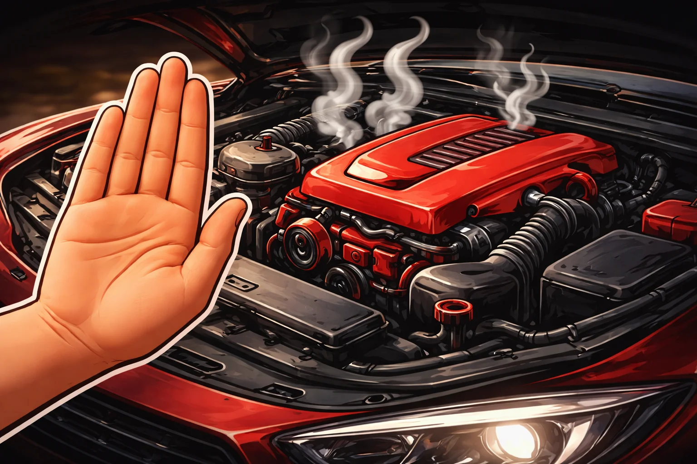
? Les 7 Attitudes Cl�s du Conducteur M�cano � Bord
Ce qui change tout
"La m�canique, ce n'est pas une affaire de cambouis. C'est une affaire de bon sens, de r�gularit� et de respect. Ces 7 attitudes font la diff�rence entre celui qui subit sa voiture et celui qui la ma�trise."
1 � Observer avant d'agir
Avant de toucher quoi que ce soit, regarde. �coute. Sens. L'observation est ton premier outil � et il est gratuit.
?? "Je vois d'abord, je touche ensuite."
2 � Rester calme face � l'impr�vu
La panique te fait prendre de mauvaises d�cisions. Un voyant allum� n'est pas une urgence � c'est une information.
?? "Je respire. Je lis. J'agis."
3 � �tre r�gulier plut�t que parfait
Une v�rification rapide chaque mois vaut mieux qu'une r�vision compl�te tous les 2 ans. La r�gularit� prot�ge mieux que la perfection.
?? "5 minutes par mois = 0 mauvaise surprise."
4 � Faire confiance � son ressenti
Si quelque chose semble diff�rent � un bruit, une vibration, une odeur � c'est que quelque chose a chang�. Ton ressenti a de la valeur.
?? "Ma voiture me parle. J'apprends � l'�couter."
5 � Poser des questions sans honte
Un garagiste honn�te appr�cie un client curieux. Poser une question n'est pas une faiblesse � c'est une comp�tence.
?? "Je ne comprends pas tout. Et c'est normal."
6 � Prendre des notes et photographier
Un voyant allum� ? Prends une photo. Un bruit bizarre ? Note quand il appara�t. Ce que tu documentes, tu peux l'expliquer.
?? "Ce que je note, je ma�trise."
7 � D�cider, pas subir
Tu es propri�taire de ta voiture. Tu choisis quand, o� et comment elle est entretenue. Comprendre, c'est reprendre le contr�le.
"Cette �tape, c'est ta rencontre avec ta voiture."
?VIDEO_ETAPE1_01Pascal montre chaque zone de la carte grise et explique simplement? 5 � 7 minutes
1.1 � Identifier sa voiture
� retenir
Ta carte grise, ta plaque d'immatriculation et ton carnet constructeur sont les 3 documents de base de ta relation avec ta voiture. Commence par les retrouver et les lire.
1.2 � Lire sa carte grise sans stress
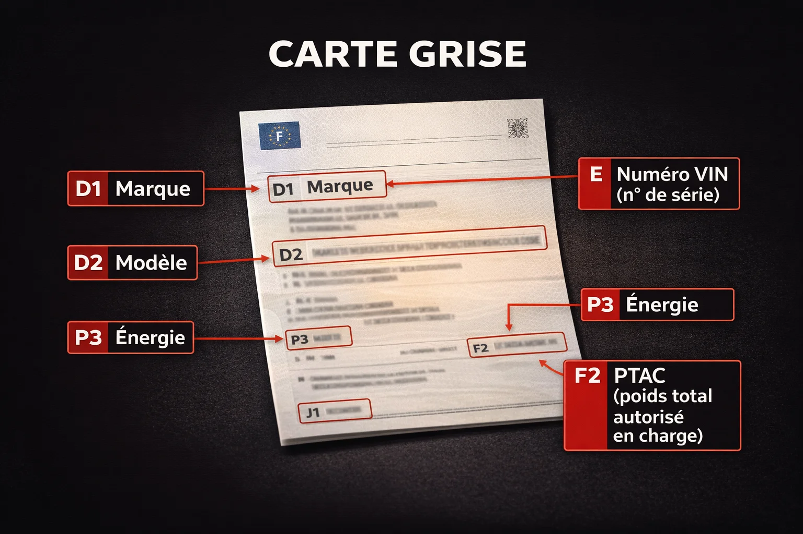
Zone
Ce que �a contient
D.1
Marque du v�hicule (ex : Renault, Peugeot)
D.2
Type, variante, version du mod�le
E
Num�ro d'identification VIN (17 caract�res)
P.3
Type de carburant (ES = essence, GO = diesel, EH = hybride)
J.1
Cat�gorie du v�hicule (M1 = voiture particuli�re)
"Apprends � conna�tre ta voiture avant de la juger."
?? Pourquoi cette fiche ?
Remplis ces informations une seule fois � elles seront sauvegard�es automatiquement sur ton appareil. Elles te seront utiles tout au long de la formation et chez ton garagiste.
Section 1 � Informations g�n�rales
Section 2 � Donn�es carte grise
Zone
Ce que �a contient
Note personnelle
D.1
Marque
D.2
Type, variante, version
E
Num�ro VIN (17 caract�res)
P.3
Type de carburant
J.1
Cat�gorie du v�hicule
F.2
Masse max. autoris�e (PTAC)
Section 3 � Informations pratiques
�tiquette porte conducteur ou manuel
Carnet constructeur ou sous capot
R�servoir avant moteur
Sous capot ou dans le coffre
Section 4 � Ma relation avec ma voiture
? Sauvegard� automatiquement
?? Citation Pascal
"Avant de me parler de ton probl�me, dis-moi quelle voiture tu conduis."
1.5 � Lire son ordinateur de bord
?VIDEO_ETAPE1_02Pascal montre le tableau de bord et explique les infos cl�s? 2 � 3 minutes
1.6 � Trouver les informations cl�s
Information
O� la trouver
Pression des pneus
�tiquette sur le montant de la porte conducteur
Type d'huile moteur
Carnet constructeur ou autocollant sous le capot
Num�ro de s�rie (VIN)
Case E de la carte grise + plaque sur le tableau de bord
1.7 � Relier sa voiture � son entretien futur
Le lien essentiel
Ces informations ne sont pas juste administratives. Elles d�terminent le type d'huile, le carburant et les intervalles d'entretien sp�cifiques � ton v�hicule. Conna�tre ta voiture, c'est d�j� l'entretenir correctement.
1.8 � Les commandes essentielles � conna�tre
� conna�tre d�s le premier jour
Les commandes de base sont les bras du conducteur. Les conna�tre �vite les mauvaises surprises sur la route.
Commande
O� elle se trouve
� savoir
Feux de croisement / route
Commodo gauche du volant
Croisement = usage normal. Route = uniquement hors agglom�ration et sans voiture en face.
Feux de d�tresse (warnings)
Bouton rouge/orange au centre du tableau de bord
� allumer en cas d'arr�t d'urgence, panne ou danger.
Feux antibrouillard avant
Commodo gauche (rotation ou bouton d�di�)
Uniquement en cas de brouillard, neige ou forte pluie. Interdit par temps clair.
Feux antibrouillard arri�re
M�me commodo ou bouton s�par�
Obligatoire si visibilit� < 50 m. � �teindre d�s que la visibilit� s'am�liore.
Essuie-glaces
Commodo droit du volant
Plusieurs vitesses. Lave-glace = pousse vers l'avant ou bouton s�par�.
Klaxon
Centre du volant
Interdit en ville sauf danger imm�diat. Autoris� sur route pour signaler un danger.
R�gulateur / limiteur de vitesse
Commodo droit ou boutons volant
R�gulateur = maintient la vitesse. Limiteur = bloque le d�passement d'une vitesse choisie.
1.9 � Comprendre les capacit�s de ta voiture
Sur ta carte grise
Ces informations �vitent les surcharges dangereuses et les contraventions.
Donn�e
Signification
O� la trouver
F.2 � PTAC
Poids Total Autoris� en Charge � le poids maximum de la voiture charg�e (passagers + bagages)
Case F.2 de la carte grise
G � Masse � vide
Poids de la voiture sans passager ni bagage
Case G de la carte grise
Charge utile
PTAC - Masse � vide = ce que tu peux charger
Calcul simple avec la carte grise
Volume du coffre
En litres � indiqu� dans le carnet constructeur
Carnet constructeur ou site du fabricant
Capacit� r�servoir
En litres � utile pour estimer l'autonomie
Carnet constructeur
?? � retenir
D�passer le PTAC est dangereux et ill�gal.
En cas d'accident en surcharge, ton assurance peut refuser d'indemniser. Calcule toujours avant de charger.
1.10 � Le syst�me Start & Stop
?C'est quoi ? Un syst�me qui coupe automatiquement le moteur quand tu t'arr�tes (feu rouge, embouteillage) et le red�marre quand tu rel�ches l'embrayage ou le frein.
?Objectif : R�duire la consommation et les �missions en ville. �conomie r�elle : 3 � 8 % selon les trajets.
?Batterie sp�ciale : Les voitures avec Start & Stop utilisent une batterie AGM ou EFB � plus robuste que les batteries classiques. Ne pas la remplacer par une batterie ordinaire.
?Il se d�sactive quand : Climatisation � fond, moteur pas encore chaud, batterie faible, capot ouvert, ceinture non boucl�e.
?Bouton A/OFF : Tu peux d�sactiver le syst�me manuellement via un bouton sur le tableau de bord (A avec une fl�che circulaire). Il se r�active � chaque d�marrage.
Bon � savoir
Si ton moteur coupe � un feu rouge et ne red�marre pas normalement, v�rifie l'�tat de ta batterie. Une batterie AGM/EFB faible = Start & Stop d�faillant.
?? 1.11 � Les Options de ton V�hicule � � Utiliser avec Prudence
Pourquoi cette section ?
"Ces �quipements sont l� pour ton confort. Mal utilis�s, ils s'usent plus vite et peuvent co�ter cher � r�parer. Voici comment en profiter intelligemment."
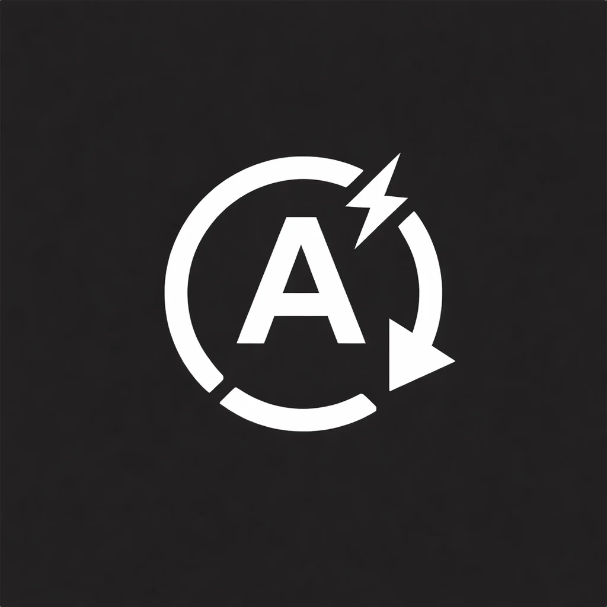
?? 1. Start & Stop
Ce que c'est : Coupe le moteur aux arr�ts pour �conomiser du carburant � �conomie possible jusqu'� 10 % en ville
?? Sollicite batterie (AGM/EFB) et d�marreur plus que la normale
?? Ces batteries co�tent plus cher � remplacer
? S'il ne s'active pas : moteur froid, clim � fond, batterie faible = d�sactivation automatique (normal)
?? Si v�hicule turbo : d�sactiver avant d'arriver � destination pour laisser le turbo refroidir
?? Fonctionne bien en ville. Peu utile sur route ou autoroute.
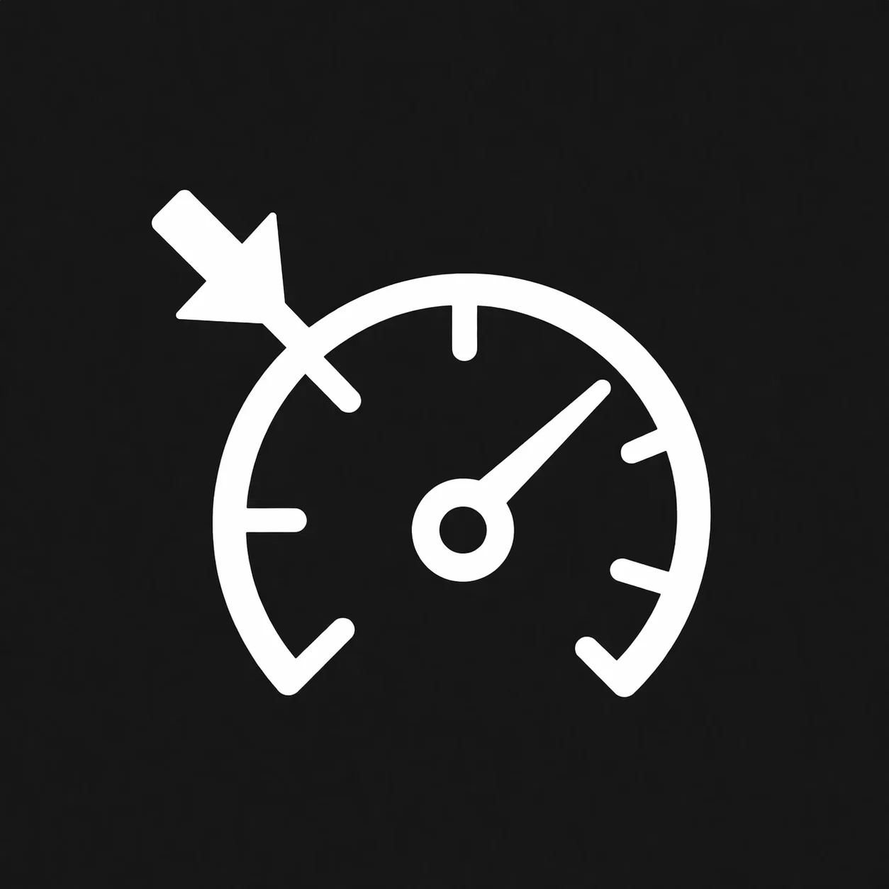
?? 2. R�gulateur de vitesse
Ce que c'est : Maintient une vitesse constante automatiquement
?? Surconsommation en mont�e / descente car le moteur force pour maintenir la vitesse
?? Moins adapt� aux routes sinueuses ou irr�guli�res
?? Ne pas utiliser dans les virages en montagne
?? Id�al sur autoroute � vitesse stable � �conomise le carburant dans ces conditions.
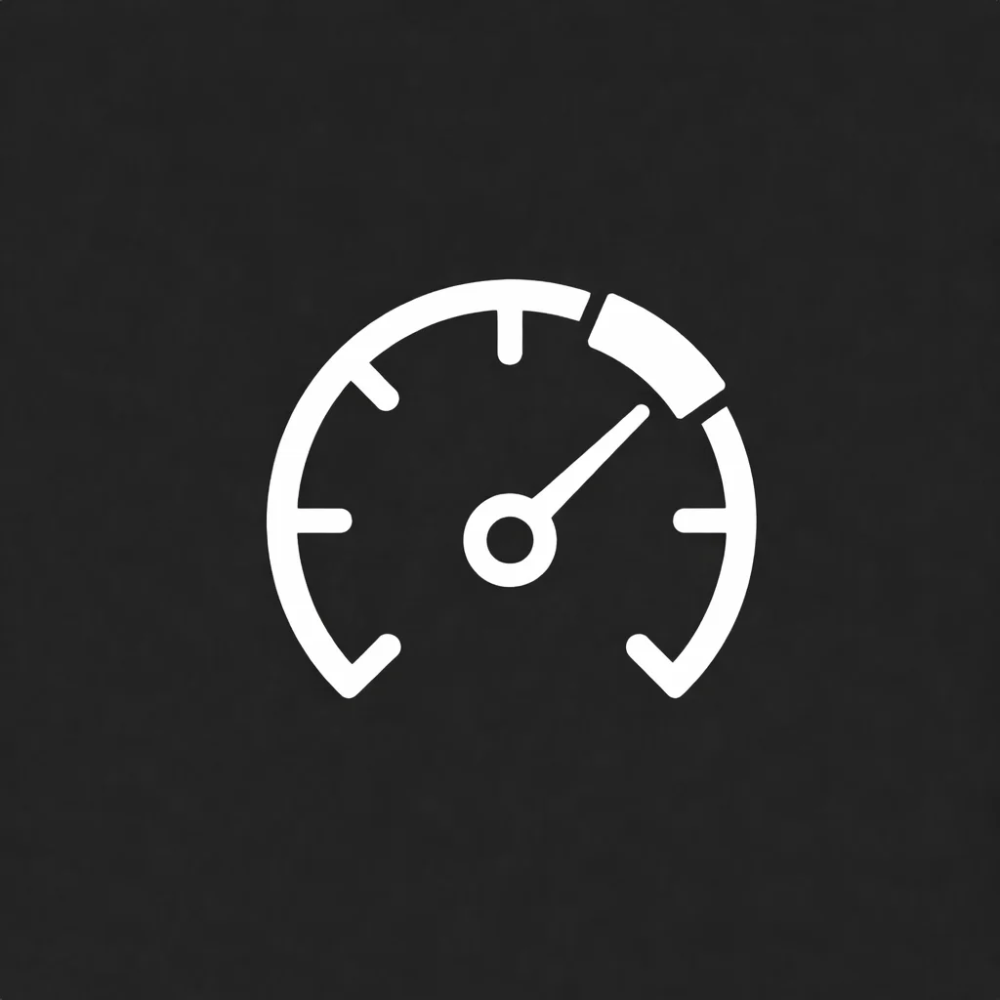
?? 3. Limiteur de vitesse
Ce que c'est : Emp�che de d�passer une vitesse d�finie
?? Si le pied reste enfonc� contre la limite, le moteur peut �tre sollicit� inutilement
? Diff�rent du r�gulateur : il limite mais ne maintient pas la vitesse
?? Utile en zones limit�es (�cole, ville). Rel�cher le pied une fois la limite atteinte.
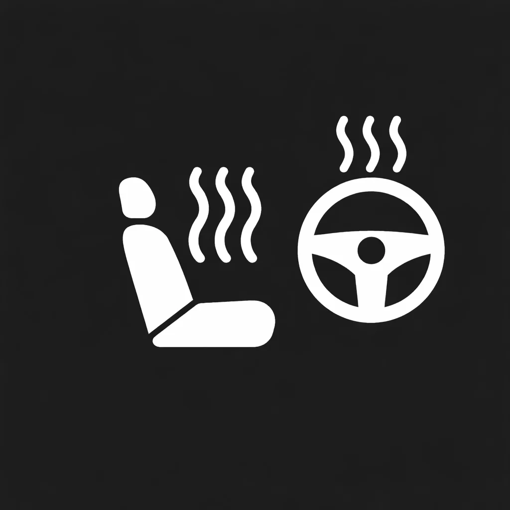
?? 4. Si�ges & Volant chauffants
Ce que c'est : R�sistances �lectriques chauffantes int�gr�es
?? Forte consommation �lectrique � sollicite l'alternateur et donc le moteur
? 2 � 3 minutes suffisent pour chauffer
?? Utile par temps froid. �teindre une fois � l'aise pour pr�server la batterie.
?? 5. Climatisation en mode Auto permanent
Ce que c'est : R�gulation automatique continue de la temp�rature
?? Le compresseur tourne plus souvent = usure accrue
?? Surconsommation : jusqu'� 25 % en ville, 10-20 % sur route
? R�gler sur une temp�rature raisonnable (�cart max 5-10�C avec l'ext�rieur)
? �teindre la clim 2-3 minutes avant de couper le moteur
?? En climat tropical : faire fonctionner la clim r�guli�rement m�me en p�riode fra�che pour �viter que les joints ne se dess�chent
?? Atteindre la temp�rature souhait�e puis repasser en ventilation simple si la temp�rature est stable.
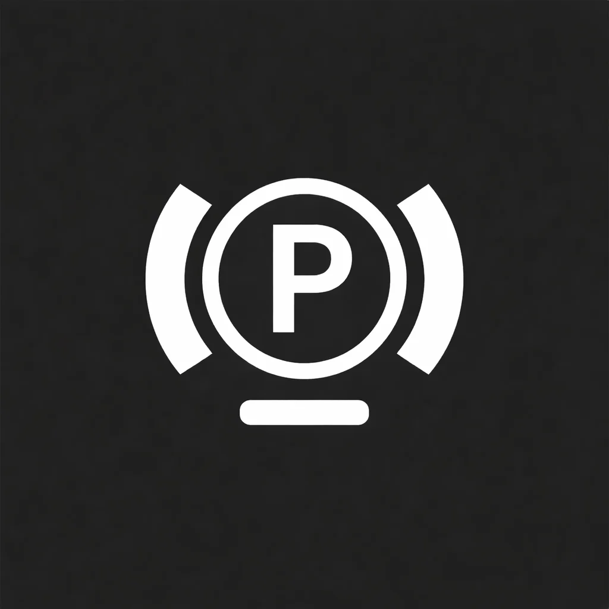
??? 6. Frein �lectrique / Auto Hold
Ce que c'est : Maintient la voiture immobile automatiquement
?? Sollicite les moteurs d'�triers �lectriques
?? Usure accrue si utilis� intens�ment en bouchons
? Pr�f�rer le frein � main classique sur longues attentes
?? Pratique aux feux. � �viter en bouchons longs.
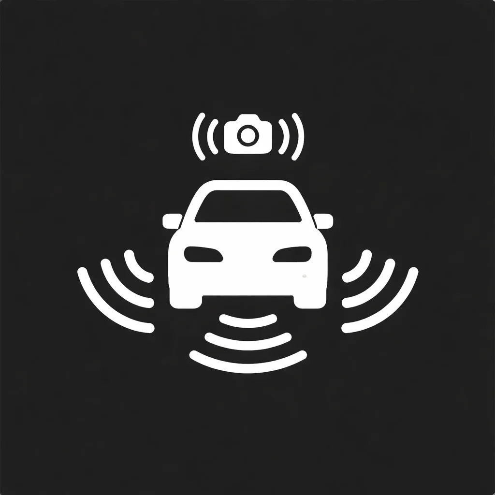
?? 7. Cam�ra & Radars de recul en continu
Ce que c'est : Syst�mes d'aide � la conduite actifs en permanence
?? Consommation �lectrique accrue si moteur �teint
? Certains syst�mes restent actifs en veille
?? V�rifier que ces syst�mes se coupent bien avec le moteur.
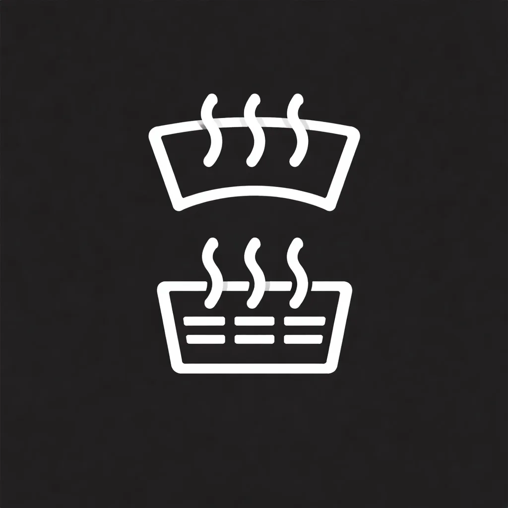
?? 8. D�givrage pare-brise / lunette arri�re
Ce que c'est : R�sistances �lectriques pour �liminer le givre
?? Tr�s forte consommation �lectrique
? 2 � 5 minutes suffisent g�n�ralement
?? Couper d�s que le pare-brise est d�gag�
?? Ne pas laisser actif tout le trajet � inutile et �nergivore.
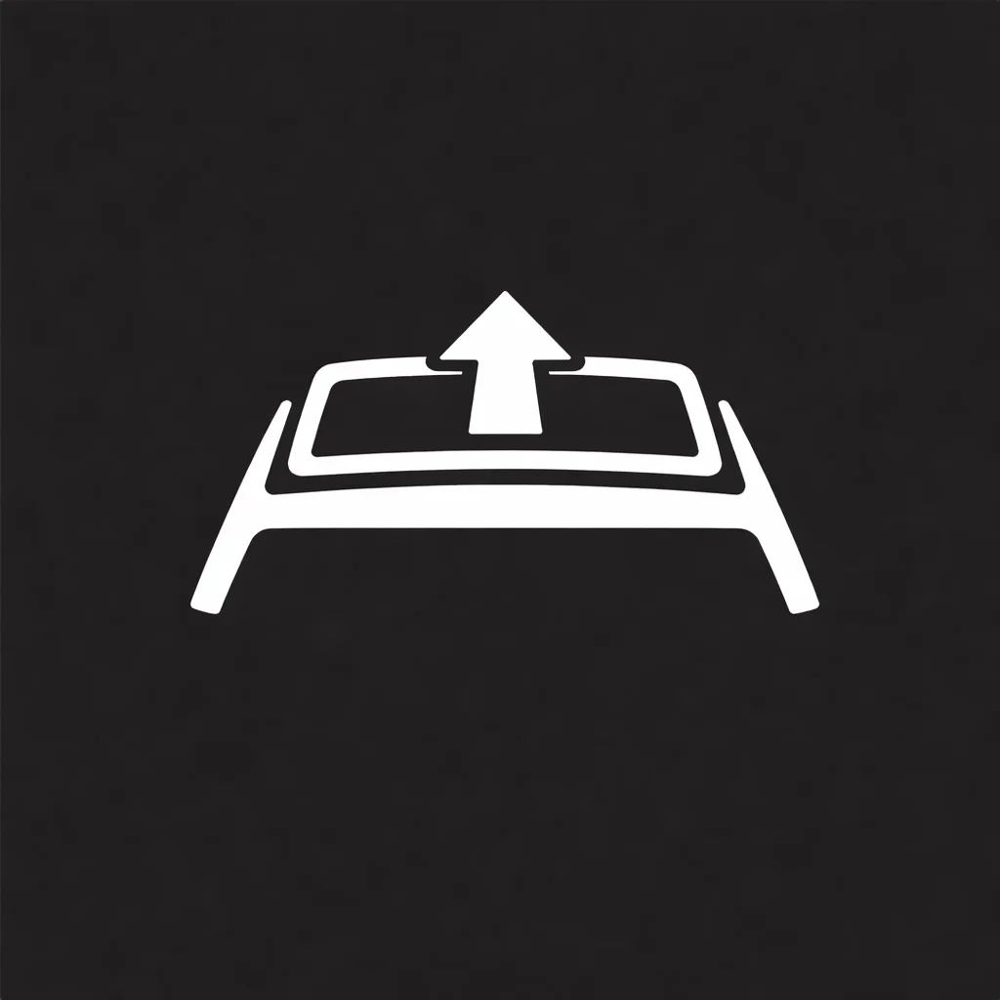
??? 9. Toit ouvrant
Ce que c'est : Panneau coulissant pour ouvrir l'habitacle
?? Les rails et joints s'usent si peu utilis� OU trop utilis�
? Entretenir avec un produit adapt� 1 � 2 fois par an
?? Ne jamais forcer si bloqu� : m�canisme fragile
?? Utiliser et entretenir occasionnellement. Un toit jamais ouvert se bloque avec le temps.
??? 10. Modes Sport / Dynamic / Racing
Ce que c'est : Passage en r�gimes moteur plus �lev�s
?? Moteur dans les tours = usure accrue
?? Consommation de carburant fortement augment�e
?? Freins et pneus aussi plus sollicit�s
?? Bo�te automatique en mode Sport = vidanges plus fr�quentes
?? � garder pour usage ponctuel (d�passement, mont�e de col). Pas pour usage quotidien.
?? Citation Pascal
"Ces options sont des outils, pas des jouets. Bien utilis�es, elles durent des ann�es. Mal utilis�es, elles te co�tent des centaines d'euros."
Quiz � Module 1
5 questions pour valider tes acquis et d�bloquer le Module 2.
V�rifier qu'aucune d�gradation n'a �t� faite pendant ton absence (rayures, bosses, impacts)
? Si tout est OK en 30 secondes ? tu pars serein(e). Un seul point douteux ? note-le. Deux points ? v�rifier avant de partir.
??? 2.3 � Les Gestes qui Rallongent la Vie de ta Voiture
Pourquoi ces gestes ?
"La plupart des pannes ne viennent pas d'un d�faut technique, mais d'un manque d'attention au quotidien. Quelques gestes simples, r�guliers et sans outils peuvent pr�server ton moteur, ton budget et ta tranquillit�."
Section 1 � Avant de d�marrer
Geste
Pourquoi c'est important
Tourne la cl� sans d�marrer tout de suite
Laisse le temps � la pompe � essence et aux voyants de s'initialiser (2-3 secondes suffisent)
Regarde ton tableau de bord avant de partir
Si un voyant reste allum�, tu le rep�res avant qu'il ne devienne une panne
Ne d�marre pas en acc�l�rant
Tu �vites un choc thermique dans le moteur � froid � rouler doucement les 3 premi�res minutes suffit
V�rifie sous la voiture avant de partir
Une flaque de liquide = signe d'une fuite � surveiller Huile (noire/brune), liquide de frein (transparent), liquide de refroidissement (vert/rose) ? Fuite visible = aller au garage
Section 2 � Pendant la conduite
Geste
Pourquoi c'est important
Anticipe et freine en douceur
Moins de contraintes sur les freins et amortisseurs ?? Conduite agressive = usure freins 2� plus rapide
Ne roule pas toujours en sous-r�gime
Le moteur s'encrasse si tu restes trop souvent � bas r�gime De temps en temps, faire monter le r�gime nettoie les injecteurs
�vite les surcharges inutiles
Un coffre trop plein fatigue pneus, amortisseurs et embrayage ?? 100 kg de surcharge = +5% de consommation ET usure accrue
�vite les petits trajets r�p�t�s � froid
Le moteur n'a pas le temps de monter en temp�rature � l'huile reste �paisse et ne lubrifie pas bien ?? Si in�vitables : faire un trajet plus long de temps en temps
Gare-toi � l'ombre quand c'est possible
La chaleur d�grade peinture, plastiques et connexions �lectriques ?? En climat tropical : encore plus important
Section 3 � Apr�s tes trajets
Geste
Pourquoi c'est important
Laisse le moteur tourner 30 secondes avant de couper
Permet au turbo et � l'huile de se stabiliser ?? Obligatoire apr�s autoroute ou trajet soutenu
Ne coupe pas imm�diatement apr�s un long trajet
�vite un coup de chaleur dans le turbo � le circuit de refroidissement a besoin de finir son cycle
Regarde ton niveau de carburant
�vite de rouler sur la r�serve � les impuret�s du fond du r�servoir peuvent boucher les injecteurs si aspir�es r�guli�rement
Section 4 � Une fois par semaine (5 minutes)
Geste
Pourquoi c'est important
V�rifie la pression des pneus � froid
Pr�serve la dur�e de vie des pneus et r�duit la consommation ?? � v�rifier tous les mois minimum
Regarde le niveau d'huile (jauge)
Un niveau bas = risque de casse moteur V�rifier moteur froid, voiture � plat
Nettoie rapidement le pare-brise int�rieur et ext�rieur
Rep�re : pneu moins gonfl� ? Fuite sous la voiture ? Voyant allum� qu'on n'avait pas remarqu� ?
?? Citations Pascal
"Prendre soin de sa voiture, ce n'est pas �tre maniaque � c'est �tre malin. Ces petits gestes te font �conomiser de l'argent, rallongent la dur�e de vie de ton moteur, et surtout, t'�vitent de stresser � chaque bruit ou voyant."
"Quand tu comprends ta voiture, tu apprends � la faire durer."
2.4 � Les 7 premiers jours
Mini-rituel 5 min/jour
Pendant 7 jours, prends l'habitude de faire ton Tour de 30 Secondes chaque matin avant de partir. Observer, �couter, sentir. � la fin de la semaine, tu conna�tras ta voiture mieux que tu ne le penses.
2.5 � Les erreurs � �viter
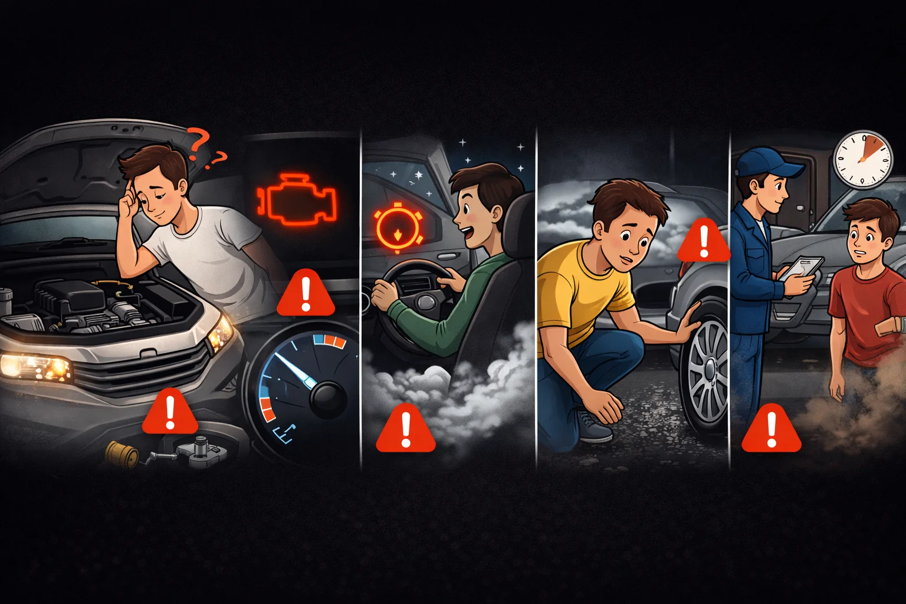
?Partir sans regarder son tableau de bord
?Ignorer un voyant allum� "parce que �a roule quand m�me"
?Ne jamais v�rifier la pression des pneus
?Acc�l�rer fort imm�diatement apr�s le d�marrage � froid
?Oublier de v�rifier le niveau d'huile depuis plus de 3 mois
2.6 � Les ceintures de s�curit�
La r�gle absolue
La ceinture r�duit les risques de d�c�s en cas d'accident de 45 %. Conducteur ET tous les passagers, � chaque trajet, m�me court.
Point
Ce qu'il faut savoir
R�glage en hauteur
La sangle d'�paule doit passer sur l'�paule, jamais sur le cou ni sous le bras. Ajuste le point d'ancrage (glissi�re sur le montant) � ta taille.
Position correcte
La sangle ventrale doit passer sur les hanches, pas sur le ventre. En cas d'accident, la pression se r�partit sur les os du bassin.
Pr�tensionneur
Dispositif qui tend automatiquement la ceinture lors d'un choc. Se d�clenche une seule fois � si activ� lors d'un accident, remplacer la ceinture.
Limiteur d'effort
Rel�che l�g�rement la sangle lors d'un choc pour r�duire les blessures � la poitrine. Fonctionne avec l'airbag.
Entretien
V�rifier r�guli�rement que la sangle n'est pas effiloch�e, coup�e ou coinc�e. Un enrouleur bloqu� = ceinture � changer.
Femme enceinte
La sangle ventrale passe SOUS le ventre, sur les hanches. Ne jamais enlever la ceinture � elle prot�ge aussi le b�b�.
Si�ge enfant
Obligatoire jusqu'� 10 ans ou 135 cm. Homologation ECE R44 ou i-Size. Le sens contraire � la marche est plus s�r pour les b�b�s.
?? Amende si non boucl�
135 � + 3 points retir�s par passager non attach�.
Le conducteur est responsable pour les passagers de moins de 18 ans.
2.7 � Le rodage moteur (voiture neuve ou r�vis�e)
Pourquoi c'est important
Un moteur neuf (ou venant d'�tre r�par�) a besoin de rodage. Les pi�ces m�caniques s'ajustent les unes aux autres. Forcer trop t�t = usure pr�matur�e.
P�riode
Ce qu'il faut faire
0 � 500 km
R�gime moteur sous 3 000 tr/min. �viter les acc�l�rations brutales et les freinages brusques. Varier les vitesses et les allures.
500 � 1 000 km
Monter progressivement jusqu'� 4 000 tr/min. Pas d'autoroute � haute vitesse constante pendant cette p�riode.
1 000 � 1 500 km
Le moteur est r�d�. Premi�re vidange recommand�e par certains constructeurs pour �liminer les particules m�talliques.
Freins neufs
Les plaquettes et disques neufs ont aussi besoin de rodage : 200 � 300 km avec des freinages progressifs avant d'utiliser le plein potentiel.
Pneus neufs
Les 200 premiers km, la surface est l�g�rement glissante (r�sidu d'usine). Conduite souple les premiers jours.
?Ne pas rouler � r�gime constant sur autoroute pendant les 1 000 premiers km (chauffe et use les segments)
?Ne pas faire de mont�es en r�gime brutal avant 500 km
?Varier les vitesses, acc�l�rer et d�c�l�rer progressivement
?Respecter les recommandations du carnet constructeur
Quiz � Module 2
5 questions pour valider tes acquis et d�bloquer le Module 3.
L'huile lubrifie toutes les pi�ces mobiles du moteur. Sans huile, le moteur s'use tr�s vite � ou casse. La jauge te permet de v�rifier le niveau sans aucun outil.
1Moteur froid obligatoire � attends au moins 10 minutes apr�s l'arr�t
2Sors la jauge de son logement (tige fine avec anneau de couleur)
3Essuie la jauge avec un chiffon propre
4Remets-la jusqu'au fond, puis ressors-la
5Le niveau d'huile doit �tre entre les deux rep�res MIN et MAX
???Jauge d'huile moteur � MIN / MAX?? Photo � venir
? C'est bon si� le niveau est entre MIN et MAX � huile propre et l�g�rement dor�e.
?? Attention si� le niveau est sous le MIN, si l'huile est noire et �paisse, ou si le voyant huile rouge s'allume. ? Rajouter de l'huile ou consulter un professionnel.
Les indices d'huile moteur � Lire l'�tiquette du bidon
Exemple : que signifie 5W40 ?
55 = viscosit� � froid � plus ce chiffre est bas, mieux le moteur d�marre par temps froid
WW = Winter = Hiver � confirme que c'est l'indice � froid
4040 = viscosit� � chaud � l'huile reste efficace quand le moteur est chaud
?? Plus le premier chiffre est bas ? meilleur d�marrage par temps froid. En climat tropical, ce point est moins critique � l'huile ne g�le jamais.
Indice
Type de moteur
Utilisation recommand�e
Climat adapt�
0W30
Moteurs r�cents, hybrides, faible cyl.
�conomie de carburant, d�marrage tr�s froid
Froid extr�me / tous pays
5W30
Moteurs modernes essence & diesel
Usage courant, �conomique
Tous climats dont tropical
5W40
Moteurs diesel et essence polyvalents
Usage intensif, grosses cylindr�es
Tous climats
10W40
Moteurs anciens ou kilom�trage �lev�
Moteurs qui consomment un peu d'huile
Climat temp�r� / chaud
???Exemples de bidons d'huile moteur (indices visibles)?? Photo � venir
?? Conseil Pascal
"Consultez toujours le carnet constructeur pour conna�tre l'huile exacte de votre v�hicule. L'indice est aussi souvent indiqu� sur un autocollant sous le capot."
?? Le mot de Pascal � Les marques d'huile moteur
"Total, Castrol, Mobil, Motul, Elf, Shell� Toutes ces marques sont s�rieuses et leurs produits respectent des normes tr�s strictes. Mais voici ce que personne ne vous dit : une huile de marque distributeur (Norauto, Feu Vert, Leclerc�) qui respecte la bonne viscosit� et les bonnes normes constructeur est aussi valable qu'une grande marque. Le prix �lev� d'un bidon refl�te souvent un partenariat constructeur � pas forc�ment une meilleure qualit�.
La r�gle de Pascal : peu importe la marque du bidon. Ce qui compte : la bonne viscosit� (5W30, 5W40�) et les bonnes normes (ACEA, API) indiqu�es dans votre carnet d'entretien. Un bidon � 12 � qui respecte ces crit�res vaut mieux qu'un bidon � 35 � avec la mauvaise viscosit�."
Fiche d�taill�e � Huile moteur
???
Huile moteur
Lubrifie et prot�ge toutes les pi�ces mobiles du moteur
Couleur : Jaune dor�e (neuve) ? noire (us�e)Bouchon : Symbole casserole avec gouttes ???V�rification : 1 fois par mois
???Bouchon huile moteur + jauge de niveau?? Photo � venir
1Moteur froid � attendre au moins 10 minutes apr�s l'arr�t
2Voiture � plat (pas en pente) pour une lecture pr�cise
3Retirer la jauge, essuyer avec un chiffon propre, remettre jusqu'au fond
4Ressortir la jauge : le niveau doit �tre entre MIN et MAX
5Produit : respecter imp�rativement l'indice constructeur (ex : 5W40) � voir carnet d'entretien ou autocollant sous le capot
? C'est bon si� le niveau est entre MIN et MAX sur la jauge, huile propre de couleur dor�e.
?? Attention si� le niveau est sous le MIN, huile noire et �paisse, odeur de br�l�. ? Rajouter de l'huile ou consulter un professionnel.
?? NE JAMAIS mettre de l'huile moteur dans un autre r�servoir.
?? NE JAMAIS m�langer deux huiles de r�f�rences diff�rentes sans consulter un professionnel.
Faire l'appoint d'huile moteur
Quand faire l'appoint ?
1Le voyant huile clignote ou s'allume � ne pas rouler, v�rifier imm�diatement
2La jauge indique un niveau sous la mi-distance MIN/MAX � appoint � pr�voir dans la semaine
3La prochaine vidange approche � v�rifier le niveau � chaque plein d'essence
??
Jauge d'huile : niveau bas visible � la trace d'huile se situe sous la mi-distance entre MIN et MAX
Choisir le bon bidon
1Cherchez l'autocollant sous le capot (souvent sur le cache moteur ou la jauge) � l'indice exact y est indiqu�
2Si pas d'autocollant : consultez le carnet d'entretien constructeur � page "huile moteur recommand�e"
3Utilisez exactement le m�me indice que celui d�j� dans le moteur � ne jamais m�langer deux r�f�rences diff�rentes
4En climat tropical, un indice 5W40 est souvent bien adapt� aux fortes chaleurs � v�rifiez quand m�me votre carnet constructeur
Les 8 �tapes de l'appoint d'huile
1Moteur froid obligatoirement � attendre au minimum 10 minutes apr�s l'arr�t du moteur
2Voiture � plat � sur un sol horizontal pour une lecture de jauge pr�cise
3Retirez le bouchon de remplissage d'huile (symbole casserole avec gouttes ??? sur le cache moteur)
4Versez 250 ml d'huile � la fois � jamais en une seule fois
5Remettez le bouchon, attendez 2 minutes que l'huile descende dans le carter
6Retirez la jauge, essuyez-la avec un chiffon propre, remettez-la � fond
7Ressortez la jauge et lisez le niveau � r�p�tez l'�tape 4 si encore trop bas
8Objectif : niveau entre le milieu et le MAX � jamais au-dessus du MAX
??
Bouchon de remplissage d'huile (symbole casserole) et bidon d'huile avec entonnoir � les 2 seuls �l�ments n�cessaires pour faire l'appoint
?
Vid�o : Faire l'appoint d'huile moteur �tape par �tape
Pascal vous montre les 8 �tapes en situation r�elle
?? Ne jamais d�passer le MAX
Trop d'huile est aussi n�faste que pas assez. Un niveau au-dessus du MAX cr�e une surpression dans le moteur � l'huile peut �tre projet�e dans des zones qu'elle ne doit pas atteindre. R�sultat : casse moteur ou fum�e blanche. Ajoutez 250 ml � la fois et rev�rifiez la jauge entre chaque ajout.
? Conseil de Pascal : Tenez un petit carnet dans votre bo�te � gants. Notez la date, le kilom�trage et la quantit� d'huile ajout�e � chaque appoint. Si vous ajoutez souvent plus de 500 ml entre deux vidanges, c'est le signe d'une fuite ou d'une consommation anormale � faire v�rifier.
?? 3.2b � Huile direction assist�e
?? Zone 5 � R�servoir de direction assist�e
?? Valable uniquement pour certaines voitures. Les v�hicules r�cents sont �quip�s d'une direction assist�e �lectrique (EPAS) � ils n'ont pas de r�servoir de liquide. Si tu ne trouves pas ce r�servoir, c'est normal : ta voiture est probablement �lectrique.
Sur les voitures avec direction hydraulique, un r�servoir contient le liquide de direction. Il est reconnaissable � son bouchon sur lequel est dessin� un volant.
1Rep�re le petit r�servoir avec le bouchon "volant" (hydraulique seulement)
2V�rifie le niveau � travers la paroi ou avec le rep�re sur le bouchon
3V�rifier tous les 6 mois � ce liquide ne se consomme pas vite normalement
4Si le niveau baisse ? probable fuite ? consulter un professionnel
??R�servoir de direction assist�e hydraulique?? Photo � venir
? C'est bon si� le niveau est stable et dans les rep�res � liquide clair ou l�g�rement ros�.
?? Attention si� le volant devient lourd � tourner, tu entends un sifflement, ou des traces de liquide sous la voiture. ? Garage rapidement.
Fiche d�taill�e � Liquide de direction assist�e
??
Liquide de direction assist�e
Aide � tourner le volant sans effort � uniquement sur voitures � direction hydraulique
Couleur : Transparent ou l�g�rement rouge/roseBouchon : Symbole volant avec fl�chesV�rification : Tous les 6 mois
??R�servoir direction assist�e hydraulique + bouchon?? Photo � venir
1Rep�rer le petit r�servoir transparent avec le bouchon "volant" (uniquement sur voitures hydrauliques)
2V�rifier le niveau � travers la paroi ou avec le rep�re sur le bouchon
3Produit : liquide de direction assist�e sp�cifique � v�rifier le carnet constructeur
4Ce liquide ne se consomme pas normalement � si le niveau baisse c'est signe d'une fuite
? C'est bon si� niveau stable entre MIN et MAX, liquide clair ou l�g�rement ros�.
?? Attention si� niveau qui baisse r�guli�rement (fuite probable), bruit de pompe au braquage, volant lourd. ? Garage.
?? JAMAIS confondre avec le liquide de frein � tous deux transparents mais totalement incompatibles.
?? Sur les voitures r�centes avec direction �lectrique : ce r�servoir n'existe pas � ne pas chercher � en ajouter.
Hydraulique ou �lectrique � lequel avez-vous ?
Avant de chercher un r�servoir de direction assist�e, la premi�re question � se poser : votre voiture est-elle �quip�e d'une direction hydraulique ou �lectrique ? La r�ponse change tout.
Type de direction
Comment le savoir ?
R�servoir ?
Entretien liquide ?
Hydraulique La plupart des voitures avant 2010
Petit r�servoir transparent sous le capot, bouchon avec symbole volant ??
Oui � � v�rifier
Oui � tous les 2 � 3 ans
�lectrique La plupart des voitures apr�s 2010
Pas de r�servoir visible pour la direction � moteur �lectrique int�gr� � la colonne
Non
Aucun
?? Le mot de Pascal � Direction assist�e
"Pour la direction assist�e hydraulique, les marques de liquide (ATF Dexron, CHF 11S, PSF�) sont toutes s�rieuses d�s lors qu'elles respectent la norme de votre constructeur.
La r�gle de Pascal : ne cherchez pas la marque � cherchez la r�f�rence exacte indiqu�e dans votre manuel. Un liquide de direction mal choisi peut d�truire la pompe et la cr�maill�re en quelques semaines. ? Bonne marque mauvaise r�f�rence = destruction garantie ? Marque inconnue bonne r�f�rence = protection assur�e
La marque ne sauve pas un mauvais choix de produit."
?? Si votre voiture a moins de 15 ans, elle est probablement �quip�e d'une direction �lectrique. Pas de r�servoir, pas de liquide � v�rifier, pas de maintenance de ce type. Ne cherchez pas � en ajouter � il n'y a rien � faire de ce c�t�.
V�rifier le niveau � si votre direction est hydraulique
1Rep�rez le petit r�servoir transparent avec le bouchon symbole volant � souvent situ� sur le c�t� du moteur
2Pour une lecture pr�cise : moteur d�marr� au ralenti, volant droit (pas en but�e) � certains r�servoirs ont deux rep�res selon que le moteur est chaud ou froid
3Produit : liquide de direction assist�e sp�cifique � votre marque � v�rifiez le carnet constructeur avant tout achat
??
R�servoir de direction assist�e hydraulique � bouchon avec symbole volant, rep�res MIN/MAX visibles sur la paroi
Les 4 signes d'alerte � direction assist�e hydraulique
1Bruit sourd ou sifflement quand vous tournez le volant � pompe qui travaille � sec, niveau � v�rifier imm�diatement
2Volant de plus en plus lourd � manier � perte d'assistance, pompe ou fuite � diagnostiquer
3Tache huileuse sous la voiture c�t� avant � fuite probable sur le circuit de direction
4Niveau qui baisse r�guli�rement � ce liquide ne se consomme pas normalement, toute baisse indique une fuite
?? Ne jamais confondre avec le liquide de frein
Les deux liquides sont transparents ou l�g�rement teint�s. Mettre du liquide de direction dans le circuit de frein (ou l'inverse) d�truirait les joints. Toujours rep�rer le bon bouchon avant de verser quoi que ce soit.
?? La r�gle des 3 liquides � Pascal
"Ces 3 liquides � l'huile moteur, le frein, la direction � c'est votre check mensuel. 5 minutes sous le capot, une fois par mois, moteur froid. Vous regardez, vous comparez avec le mois d'avant. Si quelque chose a chang�, vous le savez avant que �a devienne un probl�me. C'est �a, �tre M�cano � Bord."
?? 3.2c � Liquide de frein
?? Zone 3 � Liquide de frein � R�servoir transparent
Le liquide de frein transmet la pression de ta p�dale jusqu'aux freins. C'est la s�curit� directe. Un r�servoir bas peut signifier une fuite ou des plaquettes us�es.
1Rep�re le petit r�servoir transparent (g�n�ralement marqu� d'un symbole de disque de frein)
2Lis le niveau � travers la paroi � rep�res MIN et MAX visibles
3Ne pas ouvrir le bouchon inutilement � le liquide absorbe l'humidit� de l'air
??R�servoir liquide de frein?? Photo � venir
? C'est bon si� le niveau est entre MIN et MAX � liquide transparent ou l�g�rement jaune.
?? Attention si� le niveau est sous le MIN. ? Garage imm�diatement � ne pas rouler avec un niveau de frein insuffisant.
Fiche d�taill�e � Liquide de frein
??
Liquide de frein
Transmet la pression de ta p�dale jusqu'aux freins � S�CURIT� ABSOLUE
Couleur : Transparent � l�g�rement jauneBouchon : Cercle avec ! � l'int�rieurV�rification : 1 fois par mois � lecture visuelle
1Rep�rer le petit r�servoir transparent sur le bord du compartiment moteur
2Lire le niveau � travers la paroi � rep�res MIN et MAX visibles
3Produit : DOT 4 pour la majorit� des v�hicules � v�rifier imp�rativement le carnet constructeur
4Ne pas ouvrir le bouchon inutilement � le liquide absorbe l'humidit� de l'air et se d�grade
? C'est bon si� niveau entre MIN et MAX, liquide clair ou l�g�rement jaune p�le.
?? Attention si� niveau bas (signe d'usure des plaquettes ou fuite), liquide fonc�/marron. ? Garage imm�diatement.
?? JAMAIS ajouter soi-m�me si le niveau est tr�s bas sans comprendre pourquoi � un niveau bas indique souvent une fuite ou des plaquettes �puis�es.
?? JAMAIS confondre avec le liquide de direction assist�e � tous deux transparents mais totalement incompatibles.
?? JAMAIS mettre du DOT 5 � la place du DOT 4 sans v�rification � ces deux liquides sont incompatibles.
Surveiller le liquide de frein
V�rifier le niveau � 3 �tapes visuelles
1Rep�rez le petit r�servoir transparent sur le bord du compartiment moteur � bouchon avec le symbole ?? (cercle avec point d'exclamation)
2Lisez le niveau � travers la paroi sans ouvrir le bouchon � les rep�res MIN et MAX sont visibles de l'ext�rieur
3Ne jamais ouvrir le bouchon inutilement � le liquide absorbe l'humidit� de l'air � chaque ouverture et se d�grade plus vite
??
R�servoir de liquide de frein � rep�res MIN et MAX annot�s, bouchon avec symbole ?? visible
Les indices DOT � lequel est dans votre voiture ?
Indice
V�hicules concern�s
Fr�quence de remplacement
Point d'�bullition
DOT 3
V�hicules anciens (avant 2000)
Tous les ans
205 �C (neuf)
DOT 4
Majorit� des v�hicules actuels
Tous les 2 ans
230 �C (neuf)
DOT 5.1
V�hicules haute performance
Tous les 2 ans
260 �C (neuf)
DOT 5
Motos sportives � INCOMPATIBLE voiture
�
260 �C (neuf)
?? Le mot de Pascal � Les marques de liquide de frein
"Bosch, Motul, Brembo, Ferodo, Total, Castrol� Pour le liquide de frein, toutes les grandes marques se valent si elles respectent la m�me norme DOT. Un DOT 4 Bosch et un DOT 4 Motul offrent la m�me protection � la norme l'impose.
La r�gle de Pascal : choisissez le bon indice DOT (indiqu� dans votre carnet ou sur le bouchon du r�servoir). La marque est secondaire � la norme est primordiale.
?? Exception : pour un usage sportif intensif (conduite sur circuit, freinages r�p�t�s � haute vitesse), privil�giez une marque reconnue en DOT 5.1. Pour un usage routier normal : n'importe quelle marque s�rieuse en DOT 4 suffit parfaitement."
?? Ne jamais m�langer les indices DOT
Le DOT 3 et le DOT 4 sont compatibles entre eux. En revanche, le DOT 5 (� base de silicone) est totalement incompatible avec les autres � il d�truirait vos joints de frein. En cas de doute, consultez le carnet constructeur ou un professionnel.
Quand aller au garage sans attendre ?
1Niveau sous le MIN � peut indiquer une fuite ou des plaquettes �puis�es, pas juste une consommation normale
2Liquide fonc� ou marron � liquide d�grad�, charg� en eau, � changer imm�diatement
3P�dale de frein molle ou qui s'enfonce trop � signe d'air dans le circuit ou de fuite � garage imm�diat
4Bruit anormal au freinage (grincement, craquement) � plaquettes ou disques � v�rifier
?? Le liquide de frein se change tous les 2 ans � m�me si le niveau est bon
Ce liquide est hygroscopique : il absorbe l'humidit� de l'air progressivement. Avec le temps, son point d'�bullition baisse. Lors d'un freinage intense (descente longue, freinages r�p�t�s), un liquide d�grad� peut bouillir dans le circuit � le frein ne r�pond plus. C'est l'un des rares entretiens qui ne se voit pas mais qui compte vraiment.
??
Bouchon de r�servoir de frein � inscription DOT 4 visible, symbole ?? � les 2 informations � rep�rer avant tout achat
??? 3.2d � Liquide de refroidissement
Le circuit de refroidissement maintient le moteur � bonne temp�rature. Son liquide demande une pr�caution absolue : ne jamais intervenir moteur chaud.
Quand v�rifier le niveau ?
1Le voyant temp�rature s'allume ou clignote � s'arr�ter d�s que possible, ne pas forcer
2Contr�le de routine � tous les 1 000 km ou avant un long trajet
3Apr�s une r�paration ou un choc � v�rifier qu'il n'y a pas de fuite
? C'est bon si� le niveau est entre MIN et MAX sur le r�servoir d'expansion � moteur froid.
?? Attention si� le niveau chute r�guli�rement � c'est signe d'une fuite. Un professionnel doit diagnostiquer.
Comment faire l'appoint � 5 �tapes
1Moteur froid obligatoirement � attendre au minimum 30 minutes apr�s l'arr�t. Le circuit est sous pression tant que le moteur est chaud.
2Rep�rez le r�servoir d'expansion (transparent, color�) et lisez le niveau � si entre MIN et MAX, pas d'appoint n�cessaire
3Ouvrez lentement le bouchon du r�servoir d'expansion � si vous sentez une l�g�re r�sistance, c'est normal, une petite d�pression peut se former m�me � froid
4Versez le liquide de m�me norme que celui dans le circuit � pr�t � l'emploi ou concentr� dilu� 50/50 avec eau distill�e
5Rebouchez, red�marrez le moteur 2 minutes, laissez refroidir, rev�rifiez le niveau
?? Ne jamais ouvrir le bouchon moteur chaud
Le circuit de refroidissement fonctionne sous pression (1,2 � 1,5 bar). Ouvrir un bouchon � chaud lib�re cette pression instantan�ment � le liquide en �bullition jaillit sous forme de vapeur et de projection � plus de 100 �C. C'est l'une des causes les plus fr�quentes de br�lures graves en m�canique amateur. La r�gle est absolue : 30 minutes de refroidissement minimum.
?
Vid�o : Faire l'appoint de liquide de refroidissement
1Allumez les warnings et cherchez un endroit s�r pour vous arr�ter � ne forcez pas, chaque km suppl�mentaire aggrave la situation
2Coupez la climatisation � elle sollicite le moteur, r�duisez la charge thermique imm�diatement
3Coupez le moteur d�s que vous �tes arr�t� � ne le laissez pas tourner au ralenti si le voyant est rouge
4N'ouvrez pas le capot imm�diatement si vous voyez de la vapeur blanche � attendez 15 minutes que la pression redescende
5Appelez un professionnel ou une assistance � un moteur qui a surchauff� doit �tre diagnostiqu� avant de reprendre la route
?? 3.2e � Lave-glace
Le lave-glace est le seul r�servoir sous le capot que vous pouvez remplir � tout moment, sans pr�caution particuli�re. Pas de pression, pas de risque � 30 secondes chrono.
Remplir le r�servoir � le seul sans danger
C'est le seul r�servoir sous le capot que vous pouvez ouvrir � chaud ou � froid, sans aucun risque. Pas de pression, pas de temp�rature critique.
1Rep�rez le r�servoir lave-glace � bouchon bleu avec le symbole jet d'eau (?? ou ?) � toujours sous le capot
2Ouvrez le bouchon � pas de pr�caution de temp�rature, ouvrez directement
3Versez le liquide lave-glace jusqu'au rep�re MAX
4Rebouchez et testez les essuie-glaces depuis l'habitacle
? C'est bon si� le jet atteint bien le centre du pare-brise � si le jet est d�vi�, les buses peuvent �tre r�orient�es avec une aiguille fine.
?? Ne jamais utiliser de l'eau du robinet seule � calcaire + gel en hiver = buses bouch�es.
Choisir le bon lave-glace
�t� vs Hiver � la diff�rence cl�
??�t� / toutes saisons � formule anti-insectes, nettoie les projections et pollens
??Concentr� ou pr�t � l'emploi : le concentr� est dilu� selon les indications (�t� = plus dilu�)
??
Buses lave-glace sur le capot � position et orientation correcte du jet vers le centre du pare-brise
?
Vid�o : Remplir le lave-glace et nettoyer les buses
Pascal montre le remplissage + la m�thode aiguille pour r�orienter les buses
?? Le mot de Pascal � Les marques de lave-glace
"Rain-X, Sonax, Total, Carglass, marque distributeur� Pour le lave-glace, la marque importe encore moins que pour les autres produits. Tous les lave-glaces vendus en France respectent les m�mes normes de composition de base.
La r�gle de Pascal : ce qui compte vraiment c'est : ? La saison : hiver (antigel) ou �t� (anti-insectes) ? La concentration antigel en hiver : -20 �C minimum, -30 �C si vous allez en montagne ? Pr�t � l'emploi vs concentr� : selon votre usage
Un lave-glace � -20 �C de marque distributeur � 2 � prot�ge aussi bien qu'un produit premium � 8 �. Ne payez pas la marque � payez la bonne protection."
?? 3.2f � Batterie et eau distill�e
La batterie alimente tout au d�marrage. Sur les batteries modernes, on ne peut pas v�rifier le niveau d'�lectrolyte � mais on peut inspecter visuellement l'�tat des bornes. L'eau distill�e, elle, n'est jamais un produit de remplacement � c'est un appoint d'urgence uniquement.
Batterie � contr�le visuel des bornes
?? Zone 6 � Batterie � Bornes et �tat visuel
La batterie alimente tous les syst�mes �lectriques au d�marrage. Tu ne peux pas v�rifier le niveau d'�lectrolyte (c'est ferm� sur les batteries modernes), mais tu peux contr�ler visuellement l'�tat des bornes.
1Rep�re la batterie � souvent sous le capot ou parfois dans le coffre
2Observe les bornes (+ rouge et - noir) : elles doivent �tre propres et serr�es
3Si tu vois une poudre blanche ou bleue autour des bornes ? c'est de l'oxydation
4Pour nettoyer : eau chaude + bicarbonate de soude � jamais de m�tal ou d'outil conducteur
??Batterie � bornes + et -?? Photo � venir
? C'est bon si� les bornes sont propres, sans poudre blanche, c�bles bien fix�s.
?? Attention si� la batterie est bomb�e ou gonfl�e, les bornes tr�s oxyd�es, ou le d�marrage est lent et h�sitant. ? Faire tester la batterie chez un professionnel.
Utilis�e en appoint uniquement � jamais comme liquide de remplacement
Usage : Appoint refroidissement ou lave-glace uniquementSe trouve : Pharmacie, supermarch�, station-service
??Bidon d'eau distill�e?? Photo � venir
?? L'eau distill�e n'est PAS un liquide de remplacement. C'est un appoint temporaire uniquement en cas d'urgence. D�s que tu peux, fais v�rifier par un professionnel et remets le liquide appropri�.
?? JAMAIS utiliser l'eau du robinet � la place de l'eau distill�e � le calcaire d�t�riore les circuits et les joints.
?? JAMAIS ajouter de l'eau pure dans le circuit de refroidissement en hiver � risque de gel et de casse moteur.
?? Conseil Pascal
"L'eau distill�e c'est le d�pannage d'urgence. D�s que tu peux, tu fais v�rifier par un professionnel."
?? 3.2g � Les confusions dangereuses � ne jamais faire
Cinq erreurs classiques qui peuvent co�ter tr�s cher. Les conna�tre, c'est les �viter � coup s�r.
?? LES CONFUSIONS DANGEREUSES � NE JAMAIS FAIRE
? Ce que certains font par erreur
?? La cons�quence
? Ce qu'il faut faire � la place
Mettre du lave-glace dans le refroidissement
Destruction du circuit de refroidissement � moteur hors service
Utiliser uniquement du liquide de refroidissement
Mettre de l'huile de direction dans les freins
Destruction des joints de frein � freins d�faillants
Utiliser uniquement du DOT 4 (v�rifier le carnet)
Ouvrir le bouchon de refroidissement moteur chaud
Br�lures graves par vapeur sous pression
Attendre que le moteur soit compl�tement froid (30 min min.)
Mettre de l'eau du robinet dans le refroidissement
Calcaire + gel en hiver + corrosion interne
Eau distill�e en d�pannage d'urgence uniquement
M�langer des huiles moteur de r�f�rences diff�rentes
Perte de performance + risque moteur
Toujours utiliser la m�me r�f�rence constructeur
?? 3.2h � Comprendre vos pneus
Les pneus sont le seul contact entre votre voiture et la route � voici tout ce qu'il faut savoir.
Quatre surfaces de la taille d'une carte postale portent toute la voiture. Les conna�tre, c'est rouler en s�curit�.
Lire les dimensions d'un pneu
Exemple : que signifie 205/55 R16 91V ?
205205 = largeur du pneu en millim�tres (de flanc � flanc)
5555 = hauteur du flanc en % de la largeur � ici 55% de 205mm = ~113mm de hauteur
RR = structure Radiale � tous les pneus modernes sont radiaux
1616 = diam�tre de la jante en pouces (taille du cercle central)
9191 = indice de charge = 615 kg maximum support� par ce pneu
?? R�gle absolue : Ne jamais monter des pneus avec un indice de vitesse inf�rieur � celui pr�conis� par le constructeur. C'est une question de s�curit� et d'assurance.
Les t�moins d'usure � Savoir quand changer ses pneus
?? Indicateurs d'usure l�gaux
En France, la profondeur minimale l�gale des rainures est de 1,6 mm. En dessous, le pneu est ill�gal et dangereux � risque d'aquaplaning et de perte d'adh�rence.
1Rep�re le petit triangle (?) grav� sur le flanc du pneu � il indique l'emplacement du t�moin
2Dans la rainure principale, il y a un petit plot de caoutchouc en relief (le t�moin)
3Si la surface du pneu est au m�me niveau que ce plot ? pneu � changer imm�diatement
?? Astuce Pascal � la pi�ce de 2 euros : Place le chiffre "2" dans la rainure. Si tu ne vois plus le "2", les rainures sont encore bonnes. Si tu vois enti�rement le "2" et le bord dor� de la pi�ce, il est temps de changer.
??T�moin d'usure sur un pneu + astuce pi�ce 2�?? Photo � venir
? C'est bon si� le plot du t�moin est encore nettement en dessous de la surface du pneu.
?? Attention si� la surface du pneu affleurer le t�moin, ou si tu vois des craquelures sur les flancs. ? Changer les pneus.
La date de fabrication � Le code DOT
??? Lire le code DOT
Chaque pneu porte un code DOT sur son flanc ext�rieur. Les 4 derniers chiffres indiquent la semaine et l'ann�e de fabrication.
1Cherche l'inscription DOT sur le flanc ext�rieur du pneu
2Lis les 4 derniers chiffres : exemple 2319
323 = semaine 23 de l'ann�e
419 = ann�e 2019
5Ce pneu a donc �t� fabriqu� en juin 2019
???Code DOT sur le flanc d'un pneu?? Photo � venir
?? Recommandation : Changer les pneus apr�s 5 � 7 ans m�me s'ils semblent en bon �tat. Le caoutchouc vieillit et se craquelle � l'int�rieur, m�me sans usure visible. V�rifier la date � l'achat de pneus d'occasion.
L'indice Treadwear � La long�vit� de votre pneu
?? Lire l'indice Treadwear
L'indice Treadwear est visible sur le flanc du pneu, � c�t� du marquage principal. Il indique la dur�e de vie relative du pneu par rapport � une r�f�rence standard.
1Valeurs possibles : entre 60 et 620
2Valeur de r�f�rence = 100
3Plus l'indice est �lev�, plus le pneu dure longtemps
4Exemple : un pneu indice 300 dure 3� plus longtemps qu'un pneu indice 100
?? Attention : La comparaison n'est valable qu'entre pneus de la m�me marque. Chaque fabricant a sa propre �chelle de mesure.
??
Tableau visuel comparant des pneus avec diff�rents indices Treadwear : 100 / 200 / 300 / 400
?? Le mot de Pascal � Les marques de pneus
"Michelin, Bridgestone, Continental, Goodyear, Pirelli� Pour les pneus, la marque compte VRAIMENT � c'est la grande exception par rapport aux liquides.
Voici pourquoi : les pneus haut de gamme ont des distances de freinage sur sol mouill� significativement plus courtes que les pneus bas de gamme. Sur autoroute � 130 km/h, quelques m�tres de freinage peuvent faire la diff�rence entre un accident et rien.
?? Les pneus � �viter absolument : certaines marques chinoises tr�s bon march� (Linglong, Wanli, Westlake) sont tr�s mal not�es par les organismes de tests europ�ens ind�pendants. Tr�s peu fiables sur route mouill�e.
La r�gle de Pascal : ? Budget serr� : choisissez une marque interm�diaire reconnue (Hankook, Falken, Kleber, Fulda) plut�t qu'un pneu inconnu tr�s bon march� ? Ne regardez pas que le prix : regardez l'�tiquette �nergie europ�enne � freinage mouill� minimum B ? Les 4 pneus identiques = stabilit� garantie"
Les symboles et lettres suppl�mentaires sur votre pneu
Symbole
Signification
Usage
M+S
Mud & Snow � adapt� boue et neige l�g�re
Hiver l�ger, mais ne remplace pas un pneu hiver certifi�
3PMSF ??
Flocon sur montagne � 3 pics � pneu hiver certifi�
Obligatoire loi montagne du 1er novembre au 31 mars dans 48 d�partements
XL / Extra Load
Pneu renforc� � supporte des charges plus �lev�es
V�hicules charg�s, SUV, utilitaires
Run Flat
Peut rouler apr�s crevaison
Distance limit�e (~80 km) � v�rifier l'homologation de votre v�hicule
Tubeless
Sans chambre � air
Standard sur toutes les voitures modernes
TWI
Emplacement du t�moin d'usure sur le flanc
Chercher le petit triangle ? grav� sur le flanc du pneu
??
Planche visuelle des symboles pneu : M+S, flocon 3PMSF, XL, Run Flat, Tubeless, TWI � avec explication de chacun
Les 5 r�flexes � adopter avec vos pneus
? R�capitulatif � Ce qu'il faut faire
1V�rifier la pression tous les mois et avant tout long trajet ? la pression correcte est sur le montant de la porti�re ou dans le manuel (jamais sur le flanc du pneu)
2Contr�ler visuellement les t�moins d'usure r�guli�rement
3V�rifier le code DOT � l'achat pour ne pas acheter un pneu trop vieux
4Inspecter les flancs : fissures ou bosses = changer le pneu
5Ne jamais d�passer 10 ans d'�ge, m�me si le pneu para�t en bon �tat
??
Infographie r�capitulative : les 5 contr�les pneu � faire soi-m�me
?? Conseil Pascal
"Un contr�le des pneus, c'est 2 minutes. Un pneu qui l�che sur route, c'est une tout autre histoire."
?? 3.2i � Comment changer une roue apr�s une crevaison
Pas de panique ! Avec la m�thode et le mat�riel d'origine de votre voiture, vous pouvez vous en sortir seul.
Une crevaison n'est pas une urgence si vous savez quoi faire. Suivez ces �tapes dans l'ordre, sans pr�cipitation.
Avant de commencer : les 3 types de solutions
Selon votre v�hicule, vous disposez d'une de ces 3 solutions :
?? 1 � La roue de secours compl�te
M�me taille que vos roues normales ? vous pouvez rouler normalement jusqu'au garage.
?? 2 � La roue galette (petite roue de d�pannage)
La plus courante � petite roue de d�pannage d'urgence.
1Vitesse limit�e � 80 km/h maximum
2Distance limit�e : 50 � 80 km maximum
3La pression et la vitesse max sont inscrites sur la galette elle-m�me
?? 3 � Le kit anti-crevaison (bombe + compresseur)
Sur v�hicules r�cents � solution temporaire uniquement.
1Solution uniquement pour petites perforations � inutile si le pneu a �clat�
2Se trouve dans le coffre, sous le plancher
?? V�rifiez maintenant ! Ouvrez votre coffre et identifiez quelle solution votre v�hicule poss�de. V�rifiez aussi que la roue de secours est bien gonfl�e. Une roue de secours d�gonfl�e ne sert � rien au bord de la route.
Ce que vous avez d�j� dans votre coffre
?? Mat�riel standard fourni d'origine
1La roue de secours (ou galette) ? sous le plancher du coffre ou accroch�e sous le v�hicule
2Le cric m�canique ? pour soulever la voiture
3La cl� d�monte-roue (ou croix) ? pour desserrer les boulons
4La manivelle du cric ? parfois int�gr�e � la cl�
5La douille antivol ? uniquement si votre voiture a des �crous de s�curit� (1 boulon diff�rent par roue)
?? Douille antivol : Sans cette douille, impossible de d�monter la roue. V�rifiez qu'elle est bien pr�sente dans votre kit � avant d'en avoir besoin.
?? Conseil de Pascal : Rangez tout ce mat�riel au m�me endroit et v�rifiez qu'il est complet une fois par an. Beaucoup de conducteurs d�couvrent qu'il manque la douille antivol... au bord de la route, de nuit, sous la pluie.
??
Photo du kit complet d'origine : cric, cl� d�monte-roue, manivelle, douille antivol et roue de secours pos�s au sol
Vid�o : Changement de roue �tape par �tape
?VIDEO_CHANGEMENT_ROUEVid�o : Pascal d�montre le changement de roue complet sur une vraie voiture? Dur�e � d�finir
?? PRIORIT� ABSOLUE : Se mettre en s�curit�
Avant de toucher � quoi que ce soit :
1Allumez imm�diatement vos feux de d�tresse
2Ralentissez progressivement � ne freinez pas brusquement
3Garez-vous sur le c�t�, sur terrain plat et stable si possible ? �vitez : pentes, terre meuble, autoroute
4Mettez votre gilet de s�curit� r�fl�chissant AVANT de sortir du v�hicule (il est dans la bo�te � gants)
5Placez le triangle de signalisation � 30 m�tres EN AMONT (dans le sens de la circulation qui arrive)
6Serrez le frein � main
7Passez en 1�re vitesse (ou position P pour bo�te automatique)
? NE CHANGEZ JAMAIS une roue sur le c�t� gauche du v�hicule c�t� circulation, ni sur autoroute ou voie rapide. Dans ce cas : restez dans le v�hicule, ceinture attach�e, et appelez le 15, 17 ou 18 selon votre situation.
??
Sch�ma : positionnement du triangle de signalisation � 30 m�tres en amont du v�hicule immobilis�
Les 10 �tapes du changement de roue
?? �tape 1 � Rassembler le mat�riel
1Sortir du coffre : cric + cl� d�monte-roue + roue de secours
2Poser tout � port�e de main pr�s de la roue crev�e
3V�rifier que vous avez la douille antivol si n�cessaire
1Utiliser l'extr�mit� plate de la cl� d�monte-roue
2Faire levier doucement tout autour de l'enjoliveur
3Les voitures avec jantes alu n'ont pas d'enjoliveur
?? �tape 3 � Desserrer les boulons AVANT de lever la voiture
1Tourner dans le sens inverse des aiguilles d'une montre
2Desserrer seulement � ne pas enlever compl�tement
3Appuyer avec le pied si les boulons sont durs
?? Cette �tape AVANT le cric est indispensable � si la roue est lev�e, elle tourne et vous ne pouvez plus desserrer.
?? �tape 4 � Trouver le point de cric
1Regarder sous le bas de caisse, pr�s de la roue crev�e
2Il y a une encoche m�tallique renforc�e = le point de levage
3Consulter le manuel du v�hicule si besoin
?? Positionner le cric ailleurs peut d�former le bas de caisse.
?? �tape 5 � Lever le v�hicule avec le cric
1Placer le cric sous le point de levage
2S'assurer que le cric est perpendiculaire au sol
3Tourner la manivelle progressivement
4Lever jusqu'� ce que la roue ne touche plus le sol, puis quelques centim�tres de plus (la roue de secours gonfl�e est plus haute que la roue crev�e � plat)
??
Photo : positionnement correct du cric sur le point de levage avec fl�che indiquant l'encoche m�tallique sous le bas de caisse
?? �tape 6 � D�poser la roue crev�e
1D�visser compl�tement les boulons et les mettre dans une poche ou endroit s�r (ne pas les poser par terre !)
2Si la roue est coinc�e : frapper doucement avec le poing sur le flanc du pneu pour la d�coller
3Glisser la roue crev�e sous le bas de caisse comme protection au cas o� le cric glisserait
?? �tape 7 � Monter la roue de secours
1Aligner les trous de la jante avec les goujons de l'essieu
2Visser les boulons � la main d'abord, dans l'ordre crois� (en �toile, pas en cercle) pour centrer la roue
3Serrage pr�liminaire � la main uniquement
??
Sch�ma : ordre de serrage des boulons en �toile (ordre crois�) pour une roue � 4 boulons et pour une roue � 5 boulons
?? �tape 8 � Redescendre le v�hicule
1Actionner le cric en sens inverse progressivement
2Une fois la roue au sol, retirer le cric
?? �tape 9 � Serrage final des boulons
1Serrer fermement avec la cl�, toujours en ordre crois�
2Le serrage doit �tre ferme mais sans exc�s
?? Ne montez pas debout sur la cl� pour serrer � vous risquez d'endommager la jante et l'essieu.
?? �tape 10 � V�rifications finales et rangement
1Remettre l'enjoliveur si votre v�hicule en a un
2Ranger le cric et la cl� dans le coffre
3Charger la roue crev�e dans le coffre
4V�rifier la pression de la roue de secours d�s que possible � la prochaine station-service
5Se rendre chez le garagiste d�s que possible
Apr�s le changement : ce qu'il faut savoir
Type de roue
Limite vitesse
Distance max
Conduite apr�s
Roue galette
80 km/h max
50 � 80 km max
Garage imm�diatement
Roue compl�te identique
Conduite normale
Conduite normale
Garage d�s que possible
Kit anti-crevaison
50 km/h max
V�rifier sur le kit
Garage imm�diatement
?Remettez une roue de secours gonfl�e dans votre coffre avant votre prochain trajet
?V�rifiez la pression de la roue de secours tous les mois en m�me temps que vos autres pneus
??
Infographie r�capitulative : les 10 �tapes r�sum�es en visuel, avec les points de s�curit� mis en �vidence
? Conseil de Pascal : Entra�nez-vous une fois chez vous, dans votre garage ou parking, avant d'en avoir besoin. 30 minutes d'entra�nement � froid valent mieux qu'une heure de gal�re sous la pluie, de nuit, au bord d'une route.
Ne pas contre-braquer brusquement. Tenir le volant, rel�cher l�g�rement l'acc�l�rateur, laisser l'ESP travailler.
Voyant ESP fixe allum�
L'ESP est d�sactiv� (manuellement ou d�faut). Sur piste ou neige : certains conducteurs le coupent volontairement. Sur route normale : le rallumer imm�diatement.
?? � savoir
ABS et ESP ne remplacent pas la prudence.
Ils corrigent, mais ne font pas de miracles. La distance de freinage reste longue sur sol mouill� � adapte ta vitesse.
3.5 � La direction assist�e
?Direction assist�e hydraulique (DAH) : utilise un liquide de direction. Un r�servoir est visible sous le capot (bouchon avec volant dessin�). V�rifier le niveau tous les 6 mois.
?Direction assist�e �lectrique (EPAS) : pas de liquide. Moteur �lectrique int�gr� � la colonne de direction. Pas d'entretien sp�cifique � en cas de probl�me, diagnostic �lectronique.
?Signe de probl�me (DAH) : volant qui tire d'un c�t�, bruit de sifflement ou de pompe � basse vitesse, traces de liquide rouge/brun sous la voiture.
?Signe de probl�me (EPAS) : voyant volant avec point d'exclamation allum�, sensation de lourdeur au volant.
?Ne jamais rouler en but�e : tourner le volant jusqu'� la but�e (blocage complet) et maintenir la pression endommage la pompe hydraulique ou le moteur �lectrique.
3.6 � Le filtre habitacle (filtre d'habitacle / filtre pollen)
Le filtre oubli� de la voiture
Le filtre habitacle purifie l'air entrant dans l'habitacle (poussi�res, pollens, bact�ries). Un filtre colmat� = air de mauvaise qualit� + performances de climatisation r�duites.
Point
Ce qu'il faut savoir
Remplacement
Tous les 15 000 � 20 000 km ou 1 an � selon le constructeur et l'environnement (ville pollu�e = plus souvent).
O� il se trouve
G�n�ralement derri�re la bo�te � gants, sous le tableau de bord c�t� passager, ou dans le compartiment moteur pr�s du pare-brise.
Signe qu'il est colmat�
Mauvaises odeurs dans l'habitacle, d�bit d'air faible m�me � fond, bu�e qui se forme plus vite, allergies aggrav�es.
Filtre simple vs filtre au charbon actif
Le filtre au charbon actif filtre aussi les gaz et odeurs � recommand� en ville.
Prix
Entre 10 et 30 � la pi�ce. Remplacement faisable soi-m�me sur beaucoup de mod�les (consulter le carnet constructeur).
3.7 � �coute ta voiture : bruits et vibrations
Ta voiture te parle
Un bruit ou une vibration inhabituelle est un message. Apprendre � les reconna�tre, c'est anticiper la panne avant qu'elle co�te cher.
Situation observ�e
Cause probable
Gravit�
Que faire ?
Bruit fort � froid
Huile pas encore en pression
Faible
Rouler doucement 2-3 min � normal au d�marrage
Bruit en braquant � fond
Cardan us�
Mod�r�e
RDV chez un garagiste dans la semaine
Vibration entre 90-110 km/h
�quilibrage pneus
Faible
Corriger quand possible � centre auto
Vibration si�ge � basse vitesse
Pneu ou jante d�form�e
Potentielle
Contr�le rapide � peut �voluer
Bruit au freinage (sifflement)
Plaquettes/disques us�s
Mod�r�e
Changer sous peu � ne pas tarder
Soufflerie plus faible que d'habitude
Filtre habitacle colmat�
Aucune
Remplacer le filtre habitacle (voir 3.6)
Clac sur dos-d'�ne
Silentbloc ou amortisseur
Faible
Surveiller � contr�le au prochain entretien
Bruit m�tallique sur route d�grad�e
Fixation �chappement desserr�e
Faible
V�rifier la fixation � garagiste ou contr�le
Volant qui tremble au freinage
Disque de frein voil�
Mod�r�e
Remplacer les disques et plaquettes
Ronronnement arri�re continu
Roulement de roue us�
Mod�r�e
Changer rapidement � peut �voluer
Clac en man�uvre (d�marrage)
Support moteur ou cardan
Faible
Contr�ler au prochain passage en atelier
Cliquetis � l'acc�l�ration
Bougie d�faillante ou carburant inadapt�
Faible
V�rifier � la prochaine r�vision
Boum sourd en virage
Pneus sous-gonfl�s
Potentielle
Gonfler les pneus imm�diatement
Bruit d'air aux portes
Joint de porte fatigu�
Aucune
Surveiller � inconfort uniquement
Vibration apr�s freinage fort
Freins surchauff�s / disques
Faible
Rouler doucement 5 min pour refroidir
Grondement qui augmente avec la vitesse
Roulement de roue ab�m�
�lev�e
Garage rapidement � peut bloquer la roue
Sifflement sous le capot
Courroie accessoire d�tendue ou us�e
Mod�r�e
V�rifier sous peu � avant la casse
Cognement moteur au ralenti
Huile insuffisante ou poussoir
�lev�e
V�rifier le niveau d'huile en urgence � stopper si rouge
En cas de doute, mieux vaut un contr�le inutile qu'une casse �vitable. Un roulement de roue non trait� peut bloquer ta roue en roulant.
?? 3.8 � Voyants du Tableau de Bord ? Contr�les sous le Capot
Pourquoi cette fiche ?
"Quand un voyant s'allume, ta voiture te parle. Cette fiche t'apprend � comprendre ce qu'elle dit et � faire le bon geste au bon endroit."
Code couleur universel
??
ROUGE = DANGER IMM�DIAT
? Arr�ter d�s que possible ? Ne pas continuer � rouler ? Risque de casse irr�versible
??
ORANGE = ALERTE
? Pas d'urgence imm�diate ? RDV garage dans les jours qui suivent ? Ne pas ignorer
??
VERT/BLEU = INFO
? Aucun danger ? Une fonction est active ? Clignotants, feux de route�
Les 13 voyants � conna�tre
?? DANGER IMM�DIAT � ARR�T REQUIS
Voyant
Zone � v�rifier
Ce qu'il faut faire
?? Huile moteur (burette)
Jauge d'huile sous le capot
?? ARR�T IMM�DIAT � v�rifier niveau � froid
Si bas : ajouter l'huile recommand�e
Si niveau ok : garage (probl�me de pression)
?? Temp�rature (thermom�tre)
R�servoir liquide de refroidissement
?? ARR�T IMM�DIAT � moteur en surchauffe
Ne JAMAIS ouvrir le bouchon � chaud
Attendre refroidissement complet avant de v�rifier
?? Batterie (rectangle +/-)
Batterie et c�bles sous le capot
V�rifier cosses : si oxyd�es ? nettoyer
Si cosses ok ? alternateur d�faillant ? garage Risque de panne imminente
?? Frein / ABS (point d'exclamation)
R�servoir de liquide de frein
V�rifier si frein � main desserr�
Si voyant reste allum� ? v�rifier niveau liquide de frein Si bas ? garage imm�diatement (fuite ou plaquettes)
?? ALERTE � � V�RIFIER RAPIDEMENT
Voyant
Zone � v�rifier
Ce qu'il faut faire
?? Check Engine (moteur)
Ensemble moteur / capteurs
V�rification visuelle inutile ? diagnostic �lectronique Si clignote ? URGENT (catalyseur en danger)
Si fixe ? prendre RDV sous 1 semaine
?? Pression pneus / TPMS (pneu avec point)
Pneus (ext�rieur du v�hicule)
V�rifier pression visuellement � tour du v�hicule
Gonfler � la station selon �tiquette porte conducteur Sous-gonfl� = +3 � 5 % de conso + danger
?? FAP (diesel uniquement)
Filtre � particules (sous le v�hicule)
Faire un trajet autoroute 20-30 min pour r�g�n�rer
Si voyant persiste ? garage
?? Direction assist�e (volant)
R�servoir direction assist�e
V�rifier niveau du liquide (si direction hydraulique)
Si direction �lectrique ? garage directement Volant peut devenir dur � man�uvrer
?? ABS seul (lettres ABS)
Syst�me de freinage �lectronique
Freins fonctionnent mais sans assistance ABS
Augmenter la distance de s�curit�
Garage d�s que possible
?? ESP / Stabilit� (voiture + serpentin)
Syst�me de stabilit�
Conduire avec prudence accrue
Peut s'activer seul sur route glissante (normal)
Si voyant fixe ? garage
?? INFORMATION � AUCUN DANGER
Voyant
Zone � v�rifier
Ce qu'il faut faire
?? Lave-glace (jet d'eau)
R�servoir lave-glace sous le capot
Ajouter du liquide lave-glace � aucun danger m�canique
?? Liquide de refroidissement bas (thermom�tre bleu)
R�servoir liquide de refroidissement
Moteur froid : compl�ter si n�cessaire Surveiller si voyant revient souvent (fuite)
?? Pr�chauffage diesel (serpentin)
Bougies de pr�chauffage (diesel)
Normal au d�marrage � attendre extinction avant de d�marrer
S'il reste allum� ? bougies � v�rifier
?? R�gle d'or sur les voyants
"Tous les voyants s'allument au d�marrage : c'est normal � c'est un test automatique."
Inqui�te-toi si l'un d'eux NE S'ALLUME PAS � il ne pourrait plus t'avertir en cas de probl�me.
R�flexe en 3 �tapes face � un voyant inconnu
1Regarde la COULEUR ? rouge / orange / vert � d�termine l'urgence
"Pr�venir, c'est d�j� r�parer. 1 minute = 100 � �conomis�s."
?VIDEO_ETAPE4_01Pascal liste les 10 erreurs idiotes avec exemples concrets et cons�quences financi�res r�elles? 8 � 10 minutes
4.1 � Les 10 erreurs idiotes
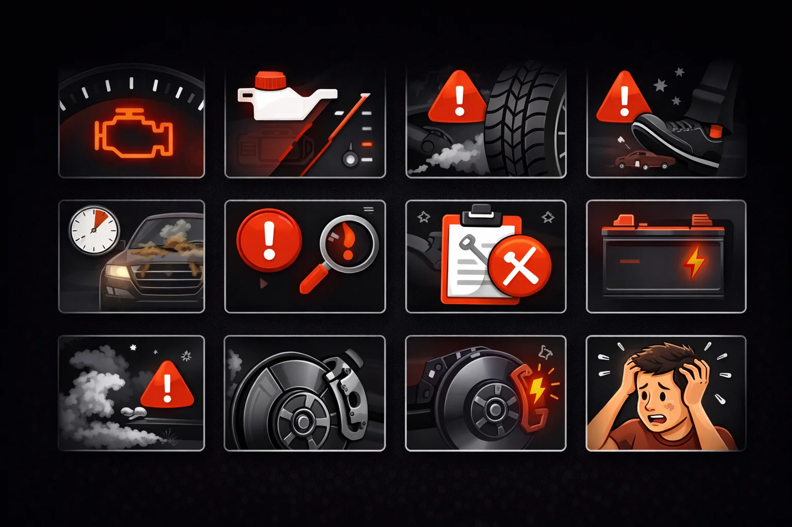
1Rouler avec des pneus sous-gonfl�s (risque d'�clatement, surconsommation)
2Braquer le volant en but�e trop souvent (use la direction assist�e)
3Acc�l�rer fort moteur froid (endommage pistons et segments)
4Couper le moteur imm�diatement apr�s un long trajet (br�le le turbo)
5Ne jamais vidanger la bo�te automatique (co�te 3 000 � 8 000 �)
6Faire uniquement des micro-trajets (batterie et DPF se d�gradent)
7Monter une c�te pied au plancher en longue dur�e (surchauffe moteur)
8Mettre trop d'huile (aussi grave que pas assez)
9Ignorer un voyant moteur qui clignote (clignotant = urgent)
10Monter/descendre les trottoirs violemment (use les amortisseurs et les jantes)
11Freiner en continu en descente (surchauffe et usure des freins) � Utiliser le frein moteur en r�trogradant
12Laisser la clim tourner inutilement (surconsommation + usure du compresseur) � �teindre 2 minutes avant d'arriver
4.2 � Tableau entretien VS cons�quences
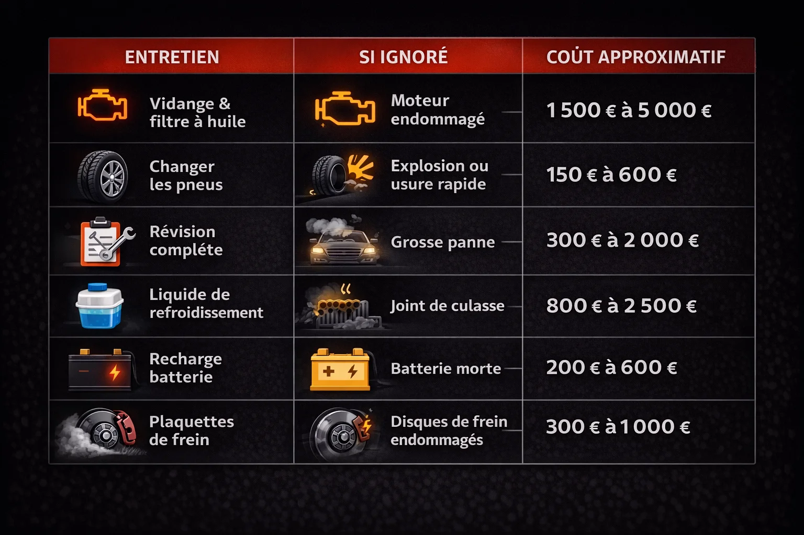
Si tu n�gliges�
Cons�quence
Co�t r�paration
Huile moteur
Casse moteur / turbo
1 500 � 5 000 �
Liquide de refroidissement
Joint de culasse
800 � 3 000 �
Courroie de distribution
Casse moteur totale
1 000 � 4 000 �
Filtre � air
Surconsommation carburant
100 � 300 �
Batterie
D�marrage impossible
150 � 500 �
Pression pneus
Risque d'�clatement
200 � 800 �
Liquide de frein
Perte de freinage
300 � 1 000 �
Erreur de carburant
Moteur hors service
1 000 � 6 000 �
4.3 � La routine 5 minutes par semaine
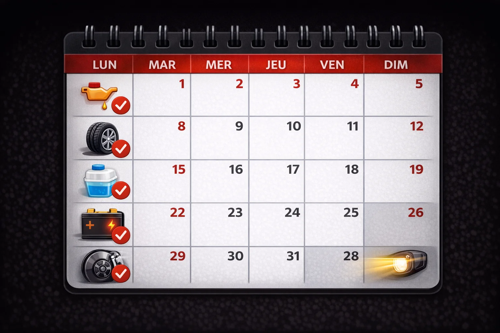
?VIDEO_ETAPE4_02Pascal d�montre les v�rifications mensuelles en temps r�el � sans outils? 5 minutes
?V�rifier le niveau d'huile (jauge)
?V�rifier le niveau de liquide de refroidissement
?V�rifier la pression des 4 pneus
?V�rifier le niveau de liquide de frein
?Tester les �clairages (phares, feux arri�re, stop)
La r�gle simple
5 v�rifications � 1 minute chacune = 5 minutes par mois pour �viter la majorit� des pannes co�teuses.
4.5 � Reconna�tre les signaux faibles : bruits & vibrations
Ta voiture te parle avant de tomber en panne
Un bruit ou une vibration inhabituelle n'est jamais anodin. Apprendre � les nommer, c'est donner les bonnes informations � ton garagiste et agir au bon moment.
Situation observ�e
Cause probable
Gravit�
Que faire ?
Bruit fort � froid
Huile pas encore en pression
Faible
Rouler doucement 2-3 min � normal au d�marrage
"Un bruit qui change ou s'aggrave = un signe que quelque chose �volue."
Photographie le voyant. Note quand �a se produit (� froid, en freinant, � grande vitesse...). Et parle-en � ton garagiste avec ces informations pr�cises.
?? 4.6 � Ton Calendrier Anti-Gal�re
La r�gle d'or
"1 minute d'attention par mois = 100 � �conomis�s. Ce que tu planifies, tu ne le subis pas."
Mois
Ce que tu v�rifies
Fr�quence
Janvier
Antigel, pression pneus (le froid les d�gonfle), batterie, balais essuie-glace
1� en d�but de mois
F�vrier
Niveau huile moteur, liquide lave-glace (consommation hiver ?)
Batterie (le froid accentue les faiblesses), lave-glace hiver, courroie accessoires
1� d�but novembre
D�cembre
Bilan annuel : tout ce qui n'a pas �t� fait dans l'ann�e � note pour janvier
1� bilan fin d'ann�e
?? R�currences ind�pendantes du mois
Chaque mois (5 min)
Niveau huile moteur
Niveau liquide lave-glace
Pression pneus (1 tour visuel)
�clairage avant/arri�re
Chaque trimestre
Niveau liquide refroidissement
Niveau liquide de frein
�tat balais essuie-glace
Filtre habitacle (si poussi�re)
Chaque ann�e (r�vision)
Vidange huile + filtre
Filtre � air + filtre habitacle
Courroie d'accessoires
V�rification freins complets
R�flexes saisonniers
??? �t� : pression pneus ? surveiller
?? Hiver : antigel + batterie + cha�nes
??? Pluie : balais + pneus (adh�rence)
?? Chaleur : clim + refroidissement
"1 minute d'attention = 100 � �conomis�s."
Imprime ce calendrier et colle-le dans ta bo�te � gants. Coche chaque case au fur et � mesure.
Ce que tu coches aujourd'hui, tu ne le paies pas demain.
Quiz � Module 4
5 questions pour valider tes acquis et d�bloquer le Module 5.
"Savoir poser les bonnes questions, c'est d�j� se faire respecter."
?VIDEO_ETAPE5_01Pascal joue les 2 r�les (conducteur et garagiste) � jeu de r�le complet sur les situations types? 8 � 10 minutes
5.1 � Les 10 Questions au Garagiste
La r�gle d'or
"Un garagiste honn�te aime les clients curieux. Poser une question, c'est montrer que tu es inform�(e) � et �a change tout."
#
Situation
La phrase exacte � dire
Pourquoi �a marche
1
Avant toute r�paration
"Pouvez-vous me faire un devis �crit d�taill� avant de commencer ?"
Te prot�ge contre les mauvaises surprises � la facturation
2
Face � une pi�ce inconnue
"Quelles sont les pi�ces concern�es et leur r�f�rence constructeur ?"
Tu peux v�rifier les prix en ligne � �a d�courage les marges abusives
3
Avant de signer
"Est-ce que ce remplacement est urgent ou peut-il attendre quelques semaines ?"
Diff�rencie l'urgence r�elle de la vente opportuniste
4
Apr�s devis accept�
"Quelle est la garantie sur les pi�ces et la main-d'�uvre ?"
Tout professionnel s�rieux garantit son travail � minimum 6 mois
5
Pi�ce � remplacer
"Pouvez-vous me montrer la pi�ce us�e avant de la remplacer ?"
Preuve visuelle que le remplacement est justifi�
6
Devis �lev�
"Y a-t-il des alternatives moins co�teuses � pi�ces d'occasion certifi�es, reconditionn� ?"
Ouvre la discussion sans �tre agressif(ve)
7
Avant de laisser le v�hicule
"Combien de temps durera l'intervention et quand puis-je r�cup�rer la voiture ?"
�vite les surprises d'organisation et les d�lais non annonc�s
8
Pression pour signer vite
"Qu'est-ce qui se passera si je ne fais pas cette r�paration maintenant ?"
Force le garagiste � justifier l'urgence r�elle
9
Lors du passage au garage
"Pouvez-vous faire un contr�le des points invisibles pendant l'intervention ?"
Tu obtiens un diagnostic complet sans surco�t, souvent inclus
10
� la r�cup�ration
"Puis-je r�cup�rer les pi�ces remplac�es et avoir la liste d�taill�e de tout ce qui a �t� fait ?"
Trace �crite pour ton carnet + preuve en cas de litige
?Conseil de Pascal � � retenir absolument
"Un garagiste honn�te aime les clients curieux. Quand tu poses ces questions, tu ne l'agaces pas � tu lui montres que tu es inform�(e). Et les gens inform�s, �a se respecte."
Si un garagiste s'�nerve ou refuse de r�pondre � l'une de ces questions ? c'est un signal d'alarme. Un professionnel s�rieux n'a rien � cacher.
5.2 � Les phrases qui fonctionnent
Situation
La phrase � dire
Au diagnostic
"Avant tout, pouvez-vous me faire un devis �crit avec le d�tail des pi�ces ?"
Face � une pi�ce inconnue
"Pouvez-vous m'expliquer � quoi sert cette pi�ce et pourquoi elle est � changer ?"
Devis flou
"Je voudrais que le devis d�taille s�par�ment : pi�ces, main-d'�uvre et taxes."
Pression pour signer
"Je comprends l'urgence, mais j'ai besoin de 24h pour valider ce devis."
� la r�cup�ration
"Puis-je avoir la liste de tout ce qui a �t� fait et les pi�ces remplac�es ?"
5.3 � Les 12 contr�les invisibles � demander
�Plaquettes et disques de frein
�Amortisseurs (rebonds anormaux)
�Durites (refroidissement, servodirection)
�Cardans et soufflets de cardan
�Rotules de direction
�Roulements de roues
��tat de la courroie de distribution (si non r�cente)
��tat de la courroie d'accessoires
�Filtre habitacle
�Filtre � carburant
��tat des balais d'essuie-glace
��tat des pneumatiques (profondeur des sculptures)
5.4 � Pr�parer son contr�le technique
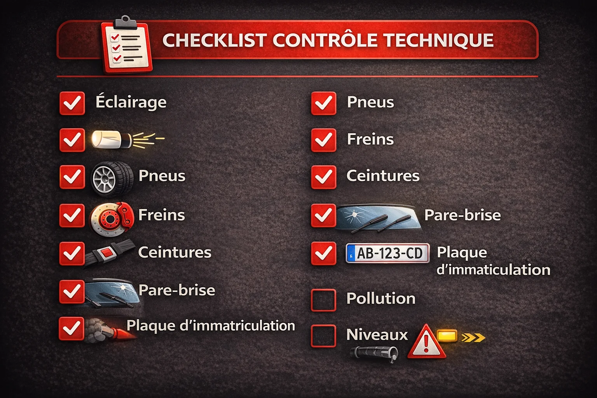
R�gle
D�tail
1?? contr�le
Apr�s 4 ans pour un v�hicule neuf
Suivants
Tous les 2 ans
Amende si non fait
135 �
?�clairages avant et arri�re fonctionnels
?Essuie-glaces en bon �tat
?Pare-brise sans fissure dans le champ de vision
?Pression et usure des pneus correctes
?Plaques d'immatriculation lisibles
?Ceintures de s�curit� en bon �tat
?Frein � main efficace
?Klaxon fonctionnel
?Niveaux de fluides OK (huile, refroidissement)
?Int�rieur et coffre propres et s�curis�s
5.5 � Contr�le m�canicien par type de v�hicule
Conna�tre ton type de moteur = parler le bon langage
Chaque motorisation a ses points de contr�le sp�cifiques. Conna�tre les tiens te permet d'orienter ton garagiste et d'�viter les oublis co�teux.
? V�hicule Essence
�Bougies et bobines � remplacement tous les 30 000 � 60 000 km selon le constructeur
�Courroie de distribution � tous les 60 000 � 120 000 km (v�rifier le carnet constructeur � rupture = moteur d�truit)
�Connecteur de charge + c�bles � v�rifier usure des cosses et de la gaine
�Vidange moteur m�me si peu utilis� � l'huile se d�grade dans le temps m�me sans kilom�trage
�Contr�le bo�te robotis�e / double embrayage � sp�cifique selon le mod�le
? V�hicule 100% �lectrique
��tat batterie (SOH � State of Health) � indique la capacit� restante en % de la batterie neuve
�Connecteurs CCS / Type 2 � v�rifier usure et propret� des fiches
�R�ducteur (engrenage unique) � remplacement d'huile selon le constructeur
�Liquide de refroidissement batterie � circuit sp�cifique � contr�ler
??Freins � surveiller particuli�rement � peu sollicit�s (freinage r�g�n�ratif) = risque de rouille sur les disques
??? 4x4, Pick-Up, SUV
�Vidanges pont avant et arri�re � souvent oubli�es, pourtant obligatoires
�Vidange bo�te de transfert � sp�cifique aux 4x4 avec s�lecteur de mode
�Rotules, bras, silentblocs � plus sollicit�s en hors-route, usure acc�l�r�e
�Joints de transmission � soufflets � inspecter r�guli�rement
�Amortisseurs renforc�s � dur�e de vie r�duite si usage hors-route fr�quent
?? Tout v�hicule avec Bo�te Automatique
�Vidange bo�te auto � tous les 60 000 � 80 000 km (souvent n�glig�e = bo�te c�dant � 150 000 km)
�Adaptations et calibrations �lectroniques � la bo�te apprend ton style de conduite, un reset peut �tre n�cessaire
�Bloc hydraulique � pi�ce sensible qui r�gule les changements de rapport
?? Citation Pascal
"Conna�tre le type de ton moteur, c'est d�j� parler le bon langage quand tu arrives chez le garagiste."
Un garagiste travaille mieux � et facture moins cher � quand tu arrives pr�par�. Dis-lui ton kilom�trage, ta motorisation, le bruit pr�cis que tu entends et dans quelle situation.
?? 5.6 � Carnet de Bord & Suivi des Entretiens
"Ce que tu notes, tu ma�trises."
Pourquoi tenir un carnet ?
?Savoir ce qui a �t� fait, quand et par qui
?�viter les oublis de vidange, filtres, pneus
?Planifier les prochaines interventions
?Conserver la valeur de la voiture
?Rassurer un futur acheteur avec un suivi clair
?? � retenir
"Ce que tu �cris aujourd'hui te prot�ge demain."
Les 6 rubriques essentielles
#
Rubrique
Ce qu'on y note
1
Entretien r�gulier
Vidange, filtres, liquides, bougies, courroie
2
R�parations & interventions
Toute pi�ce chang�e ou travail effectu�
3
Suivi des pneus
Date, marque, km, permutation, pression
4
D�penses auto
Essence, assurance, p�age, parking
5
Dates importantes
CT, assurance, r�vision constructeur
6
Contacts utiles
Garage, assurance, d�pannage, CT
Comment l'utiliser simplement
1Tiens ton carnet dans ta bo�te � gants ou sur ton t�l�phone
2Mets-le � jour apr�s chaque visite au garage
3Note le kilom�trage exact � chaque op�ration
4Ajoute les factures au m�me endroit
5Relis-le tous les 3 mois pour anticiper les prochaines actions
R�sultats attendus
?Meilleure organisation
?Budget auto ma�tris�
?Voiture entretenue, fiable et valoris�e
?Revente facilit�e gr�ce � un dossier complet
?? Citations Pascal
"Ce n'est pas le garage qui g�re ta voiture � c'est toi."
"La r�gularit� vaut plus qu'une r�paration."
?? 5.7 � Ce que ton garagiste peut voir, pas toi
?? Citation
"Celui qui contr�le r�guli�rement n'a jamais peur du contr�le technique � il sait d�j� ce que l'expert va trouver."
�l�ment
Pourquoi invisible
Question � poser
Fr�quence
Plaquettes & disques
Sans d�monter les roues
"Pouvez-vous v�rifier l'usure des plaquettes et disques ?"
10 000 � 15 000 km
Amortisseurs
Sous la voiture
"Pouvez-vous contr�ler l'�tat des amortisseurs ?"
20 000 � 30 000 km
Durites (frein, essence, refroid.)
Accessibles uniquement par dessous
"Pouvez-vous v�rifier fuites ou craquelures ?"
� chaque entretien
Cardans et soufflets
Sous la voiture
"Pouvez-vous v�rifier les soufflets de cardan ?"
Tous les 15 000 km
�chappement & catalyseur
Cach�s sous la voiture
"L'�chappement n'est pas perc� ou rouill� ?"
Tous les 2 ans
Rotules & biellettes
N�cessitent levage et outils
"Pouvez-vous v�rifier le jeu des rotules ?"
Tous les 20 000 km
Silentblocs
Sur les bras de suspension
"Les silentblocs ne sont pas fissur�s ?"
� chaque r�vision
C�bles de frein � main
Sous la voiture
"Pouvez-vous v�rifier la tension du frein � main ?"
Tous les 10 000 km
Filtres cach�s
Non accessibles sans outils
"Quand les filtres ont-ils �t� chang�s ?"
1 fois par an
Joints spi moteur/bo�te
Inspection par dessous uniquement
"Y a-t-il des fuites d'huile moteur ou bo�te ?"
� chaque vidange
Suspension / train arri�re
N�cessite pont �l�vateur
"Pouvez-vous v�rifier le jeu du train arri�re ?"
Tous les 2 ans
Usure int�rieure des pneus
Invisible sans lever la voiture
"Pouvez-vous v�rifier l'usure int�rieure des pneus ?"
Tous les 10 000 km
?
Conseil Terrain de Pascal � � lire absolument !
?? LE TRIO INS�PARABLE :
Pompe � eau + Courroie de distribution + Calorstat
Quand tu changes la courroie de distribution, le m�canicien doit vider le circuit de refroidissement pour acc�der aux pi�ces. C'est le moment id�al pour changer aussi la pompe � eau ET le calorstat (thermostat).
Pourquoi ?
? Dans 20 000 km, la pompe l�che ? on revide le circuit ? on repaye toute la main d'�uvre
? Le calorstat, m�me chose : si on est d�j� dans le circuit, autant le changer
?? La r�gle d'or :
Quand on vide le circuit d'eau pour une r�paration, on change TOUJOURS pompe � eau + calorstat en m�me temps.
Tu paies les pi�ces (peu co�teuses) mais tu �conomises toute la main d'�uvre.
?? Phrase � dire � ton garagiste :
"Puisque vous videz le circuit, pouvez-vous changer la pompe � eau et le calorstat en m�me temps ?"
3 phrases � dire � ton garagiste
?"Je ne sais pas le voir moi-m�me, pouvez-vous le contr�ler ?"
?"Je pr�f�re v�rifier maintenant que r�parer plus tard."
?"Dites-moi franchement : tout est bon dessous ?"
?? Pascal
"Plus tu contr�les t�t, plus ton contr�le technique devient une simple formalit�."
?? 5.8 � Le Contr�le Technique � Anticiper, c'est rouler serein
?? Pascal
"Le contr�le technique, ce n'est pas un pi�ge : c'est une assurance de s�curit� pour toi et pour les autres."
Quand le faire ?
Cas
�ch�ance
V�hicule neuf
Apr�s 4 ans de la 1�re mise en circulation
V�hicule +4 ans
Tous les 2 ans
Revente
Moins de 6 mois avant la vente (obligatoire)
V�hicule utilitaire l�ger
Tous les 2 ans
?? Sans CT valide :amende 135 � + risque en cas d'accident
Chiffres cl�s 2024 (source Minist�re)
26,65 M
contr�les effectu�s en 2024
1 / 5
v�hicule soumis � contre-visite
25,4 %
taux contre-visite pour +10 ans
70 � 90 �
tarif moyen selon les r�gions
Causes principales de contre-visite : pneus (10,3 %) / �clairage (9 %) / pollution (6,8 %) / freinage (5,3 %)
Les 10 points � v�rifier AVANT d'y aller
#
�l�ment
Ce qu'il faut v�rifier
1
Feux & ampoules
Tester tous : phares, stop, clignotants, antibrouillards
2
Essuie-glaces + lave-glace
Remplir + v�rifier fonctionnement
3
Pare-brise
Pas d'impact dans le champ de vision � fissure >30 cm = refus automatique
4
Pneus
Pression + usure (min l�gal 1,6 mm de profondeur)
5
Plaques d'immatriculation
Propres, fix�es, lisibles
6
Ceintures de s�curit�
Verrouillage et enroulement corrects
7
Frein � main
Tension + tenue en pente
8
Klaxon
Test rapide avant de partir
9
Liquides
Huile, frein, refroidissement (niveaux + fuites)
10
Propret� g�n�rale
Voiture propre = bonne impression
?? Astuce diesel
Faire un trajet autoroute la veille pour r�g�n�rer le FAP ? �vite les refus pollution
Erreurs fr�quentes des novices
#
Erreur � �viter
1
Attendre le dernier moment ? stress + amende
2
N�gliger un voyant allum� ("�a passera quand m�me")
3
Arriver avec voiture sale ou pneus d�gonfl�s
4
Oublier les documents (carte grise obligatoire)
5
Penser que c'est un jugement, pas une pr�vention
Bonnes pratiques
?Prendre RDV 1 mois avant l'�ch�ance
?Conserver chaque rapport et facture
?Photographier les voyants si incertitude
?Lors d'une revente : dossier complet = vente rapide
?? Pascal
"Un contr�le technique, c'est 70�90 � pour 2 ans de tranquillit�. Une n�gligence, c'est parfois des milliers d'euros... ou pire."
Quiz � Module 5
5 questions pour valider la formation compl�te et d�bloquer les Bonus.
"Comprendre le langage de ton garagiste, c'est d�j� ne plus �tre perdu face � lui."
Quiz � Module 6
5 questions pour valider le vocabulaire et d�bloquer les Bonus.
Question 1 sur 50 %
Question 1 / 5
Chargement�
?? Section Bonus � Bonus Exclusifs
Tes 9 Bonus D�bloqu�s
Clique sur un bonus disponible pour le d�couvrir. Termine les modules pour d�bloquer les suivants.
?? Formation Compl�te
F�licitations � Tu es maintenant un(e) conducteur(trice) M�cano � Bord !
"�tre M�cano � Bord, c'est �tre ma�tre de sa route."
?VIDEO_FELICITATIONS_01Pascal f�licite l'�l�ve pour son parcours complet, r�sume les comp�tences acquises et pr�sente l'application M�cano � Bord comme prochaine �tape.? 3 � 5 minutes
Tu as termin� la M�thode Sans Stress Auto. Tu fais maintenant partie des conducteurs autonomes, curieux et confiants.
? Tu connais ta voiture sur le bout des doigts
? Tu sais lire ses signaux sans paniquer
? Tu anticipes les pannes avant qu'elles arrivent
? Tu dialogues avec confiance chez le garagiste
? Tu entretiens ton v�hicule comme un pro
"�tre M�cano � Bord, c'est �tre ma�tre de sa route."
� Pascal, �lectrom�canicien 25 ans
?? Partage ton exp�rience !
Tu viens de terminer un parcours qui va changer ta fa�on de voir ta voiture.
Ton t�moignage peut aider d'autres conducteurs � franchir le pas. Partage ton exp�rience en quelques mots ou en vid�o !
Merci ! Ton t�moignage a �t� transmis � Pascal. Tu inspires d�j� d'autres conducteurs ! ??